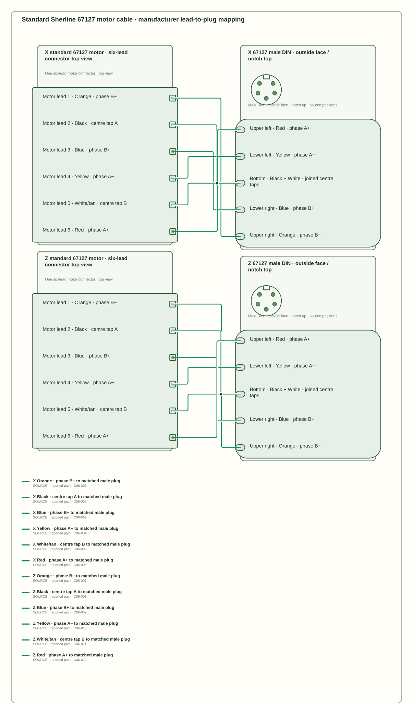

Sherline CNC-ready lathe + 8760
Contact assignmentsMain wiring diagram · SmoothieBox
Why this controller: Original machine uses separate motor power stages. Keep their motor-power/phase/encoder wiring; connect SmoothieBox exterior command contacts through the shown qualified interfaces. Chapter 18 is a proposed case harness, not an as-built rating certificate.
Selected architecture: SmoothieBox exterior STEP/DIR contacts feed the depicted AHCT125 interface into the Sherline 8760 DB25 peripheral. Retain the 8760 power stage, motor cables and hardware stop/reset functions.
Original machine uses separate motor power stages. Keep their motor-power/phase/encoder wiring; connect SmoothieBox exterior command contacts through the shown qualified interfaces. Chapter 18 is a proposed case harness, not an as-built rating certificate. Selected architecture: SmoothieBox exterior case contacts with retained external power stages. The main diagram and connection-ID schedule define the current proposed routes. Dotted GUESS routes need the named commissioning checks; OPEN routes remain disconnected until the missing terminal, rating or interface is established. Previous Core alternatives remain only in the superseded historical architecture record.
Current installation sequence
- Match the actual machine and controller revisions, trace the unpowered harness and verify all signal/reference, power and independent safety boundaries before energising. Follow the current connection IDs rather than the superseded architecture prose.
- X and Z commands · each buffer input and output pin: SmoothieBox exterior contact assignment is a proposed Chapter 18 harness; verify the fitted case and logic level. New 3.3 V to 5 V buffer proposal. Confirm actual receiver load fits AHCT output, active-low STEP and low pulses at least 22 µs; verify pin 1 orientation and X/Z firmware assignment.
- Inactive STEP at reset · two 10 kΩ pull-ups: SmoothieBox exterior contact assignment is a proposed Chapter 18 harness; verify the fitted case and logic level. Proposed inactive-high STEP bias. Configure inverted pulses at least 22 µs and prove reset/startup behaviour at the loaded DB25 before enabling motion. A pull-up cannot correct a firmware output actively driven low.
- Buffer power, decoupling and each output-enable: SmoothieBox exterior contact assignment is a proposed Chapter 18 harness; verify the fitted case and logic level. SmoothieBox J42.1/+5V and J42.2/GND are supplied separately from the same verified logic distribution. SmoothieBox J5 GND must share the buffer signal reference. Do not feed the driver-box 24 V motor supply into the logic rail. The buffer is not galvanic isolation.
- SmoothieBox power and each DB25 ground return: SmoothieBox exterior contact assignment is a proposed Chapter 18 harness; verify the fitted case and logic level. Trace individual cavities and bond verified signal returns; motor currents must not flow through SmoothieBox.
- Retained driver-box motor cables and independent stop: SmoothieBox exterior contact assignment is a proposed Chapter 18 harness; verify the fitted case and logic level. Leave the matched X and Z motor DIN cables and actual 24 V supply (manufacturer contents list 3.7 A while specifications list 4 A; verify its label) connected to the 8760. No SmoothieBox pin connects to a motor phase in this conversion. Inspect H3 panic-stop and RESET; their header cavity numbers are not published. This is an unchanged cable instruction, not an invented motor pin map. The 8760 On/Off switch stops motors only: the program continues and the spindle must be stopped separately. H1 adjusts idle-current reduction; H2 is unimplemented and stays open. Do not hot-plug any matched DIN motor cable. No manufacturer DIN cavity schedule or external safety-rated E-stop circuit is supplied.
Every connection · explanation and direct source evidence
| Wire | From terminal | To terminal | Explanation, checks and source links |
|---|---|---|---|
| C01-001 GUESS MAIN | SmoothieBox · exterior terminals · DRVX.1 · X STEP | U1 · SN74AHCT125N · 2 · 1A | XS buffer input: SmoothieBox · exterior terminals · DRVX.1 · X STEP → U1 · SN74AHCT125N · 2 · 1A. This is a new conversion wire; the sources establish endpoint functions, while the connection and compatibility require the checks below. New 3.3 V to 5 V buffer proposal. Confirm actual receiver load fits AHCT output, active-low STEP and low pulses at least 22 µs; verify pin 1 orientation and X/Z firmware assignment.
|
| C01-002 GUESS MAIN | U1 · SN74AHCT125N · 3 · 1Y | 8760 DB25 · machine peripheral · 3 · X STEP | XS buffered command: U1 · SN74AHCT125N · 3 · 1Y → 8760 DB25 · machine peripheral · 3 · X STEP. This is a new conversion wire; the sources establish endpoint functions, while the connection and compatibility require the checks below. New 3.3 V to 5 V buffer proposal. Confirm actual receiver load fits AHCT output, active-low STEP and low pulses at least 22 µs; verify pin 1 orientation and X/Z firmware assignment.
|
| C01-003 GUESS MAIN | SmoothieBox · exterior terminals · DRVX.3 · X DIR | U1 · SN74AHCT125N · 5 · 2A | XD buffer input: SmoothieBox · exterior terminals · DRVX.3 · X DIR → U1 · SN74AHCT125N · 5 · 2A. This is a new conversion wire; the sources establish endpoint functions, while the connection and compatibility require the checks below. New 3.3 V to 5 V buffer proposal. Confirm actual receiver load fits AHCT output, active-low STEP and low pulses at least 22 µs; verify pin 1 orientation and X/Z firmware assignment.
|
| C01-004 GUESS MAIN | U1 · SN74AHCT125N · 6 · 2Y | 8760 DB25 · machine peripheral · 2 · X DIR | XD buffered command: U1 · SN74AHCT125N · 6 · 2Y → 8760 DB25 · machine peripheral · 2 · X DIR. This is a new conversion wire; the sources establish endpoint functions, while the connection and compatibility require the checks below. New 3.3 V to 5 V buffer proposal. Confirm actual receiver load fits AHCT output, active-low STEP and low pulses at least 22 µs; verify pin 1 orientation and X/Z firmware assignment.
|
| C01-005 GUESS MAIN | SmoothieBox · exterior terminals · DRVZ.1 · Z STEP | U1 · SN74AHCT125N · 9 · 3A | ZS buffer input: SmoothieBox · exterior terminals · DRVZ.1 · Z STEP → U1 · SN74AHCT125N · 9 · 3A. This is a new conversion wire; the sources establish endpoint functions, while the connection and compatibility require the checks below. New 3.3 V to 5 V buffer proposal. Confirm actual receiver load fits AHCT output, active-low STEP and low pulses at least 22 µs; verify pin 1 orientation and X/Z firmware assignment.
|
| C01-006 GUESS MAIN | U1 · SN74AHCT125N · 8 · 3Y | 8760 DB25 · machine peripheral · 7 · Z STEP | ZS buffered command: U1 · SN74AHCT125N · 8 · 3Y → 8760 DB25 · machine peripheral · 7 · Z STEP. This is a new conversion wire; the sources establish endpoint functions, while the connection and compatibility require the checks below. New 3.3 V to 5 V buffer proposal. Confirm actual receiver load fits AHCT output, active-low STEP and low pulses at least 22 µs; verify pin 1 orientation and X/Z firmware assignment.
|
| C01-007 GUESS MAIN | SmoothieBox · exterior terminals · DRVZ.3 · Z DIR | U1 · SN74AHCT125N · 12 · 4A | ZD buffer input: SmoothieBox · exterior terminals · DRVZ.3 · Z DIR → U1 · SN74AHCT125N · 12 · 4A. This is a new conversion wire; the sources establish endpoint functions, while the connection and compatibility require the checks below. New 3.3 V to 5 V buffer proposal. Confirm actual receiver load fits AHCT output, active-low STEP and low pulses at least 22 µs; verify pin 1 orientation and X/Z firmware assignment.
|
| C01-008 GUESS MAIN | U1 · SN74AHCT125N · 11 · 4Y | 8760 DB25 · machine peripheral · 6 · Z DIR | ZD buffered command: U1 · SN74AHCT125N · 11 · 4Y → 8760 DB25 · machine peripheral · 6 · Z DIR. This is a new conversion wire; the sources establish endpoint functions, while the connection and compatibility require the checks below. New 3.3 V to 5 V buffer proposal. Confirm actual receiver load fits AHCT output, active-low STEP and low pulses at least 22 µs; verify pin 1 orientation and X/Z firmware assignment.
|
| C01-009 GUESS MAIN | SmoothieBox · exterior terminals · DRVZ.2 · STEP GND | Verified command-interface logic reference · separate from motor current · Interface logic GND / common reference · verify receiver topology | STEP GND individual signal reference wire: SmoothieBox · exterior terminals · DRVZ.2 · STEP GND → Verified command-interface logic reference · separate from motor current · Interface logic GND / common reference · verify receiver topology. This is a new conversion wire; the sources establish endpoint functions, while the connection and compatibility require the checks below. Connect this separately identified ground only to the command-interface logic reference after verifying its common-ground/isolation topology. Motor power current must not use these conductors.
|
| C01-010 GUESS MAIN | SmoothieBox · exterior terminals · DRVZ.4 · DIR GND | Verified command-interface logic reference · separate from motor current · Interface logic GND / common reference · verify receiver topology | DIR GND individual signal reference wire: SmoothieBox · exterior terminals · DRVZ.4 · DIR GND → Verified command-interface logic reference · separate from motor current · Interface logic GND / common reference · verify receiver topology. This is a new conversion wire; the sources establish endpoint functions, while the connection and compatibility require the checks below. Connect this separately identified ground only to the command-interface logic reference after verifying its common-ground/isolation topology. Motor power current must not use these conductors.
|
| C01-011 GUESS MAIN | SmoothieBox · exterior terminals · DRVZ.6 · ENABLE GND | Verified command-interface logic reference · separate from motor current · Interface logic GND / common reference · verify receiver topology | ENABLE GND individual signal reference wire: SmoothieBox · exterior terminals · DRVZ.6 · ENABLE GND → Verified command-interface logic reference · separate from motor current · Interface logic GND / common reference · verify receiver topology. This is a new conversion wire; the sources establish endpoint functions, while the connection and compatibility require the checks below. Connect this separately identified ground only to the command-interface logic reference after verifying its common-ground/isolation topology. Motor power current must not use these conductors.
|
| C01-012 GUESS MAIN | SmoothieBox · exterior terminals · DRVX.2 · STEP GND | Verified command-interface logic reference · separate from motor current · Interface logic GND / common reference · verify receiver topology | STEP GND individual signal reference wire: SmoothieBox · exterior terminals · DRVX.2 · STEP GND → Verified command-interface logic reference · separate from motor current · Interface logic GND / common reference · verify receiver topology. This is a new conversion wire; the sources establish endpoint functions, while the connection and compatibility require the checks below. Connect this separately identified ground only to the command-interface logic reference after verifying its common-ground/isolation topology. Motor power current must not use these conductors.
|
| C01-013 GUESS MAIN | SmoothieBox · exterior terminals · DRVX.4 · DIR GND | Verified command-interface logic reference · separate from motor current · Interface logic GND / common reference · verify receiver topology | DIR GND individual signal reference wire: SmoothieBox · exterior terminals · DRVX.4 · DIR GND → Verified command-interface logic reference · separate from motor current · Interface logic GND / common reference · verify receiver topology. This is a new conversion wire; the sources establish endpoint functions, while the connection and compatibility require the checks below. Connect this separately identified ground only to the command-interface logic reference after verifying its common-ground/isolation topology. Motor power current must not use these conductors.
|
| C01-014 GUESS MAIN | SmoothieBox · exterior terminals · DRVX.6 · ENABLE GND | Verified command-interface logic reference · separate from motor current · Interface logic GND / common reference · verify receiver topology | ENABLE GND individual signal reference wire: SmoothieBox · exterior terminals · DRVX.6 · ENABLE GND → Verified command-interface logic reference · separate from motor current · Interface logic GND / common reference · verify receiver topology. This is a new conversion wire; the sources establish endpoint functions, while the connection and compatibility require the checks below. Connect this separately identified ground only to the command-interface logic reference after verifying its common-ground/isolation topology. Motor power current must not use these conductors.
|
| C02-001 GUESS MAIN | SmoothieBox · exterior terminals · GA.1 · limited 3V3 accessory supply · current budget required | R2 · X STEP pull-up · 10 kΩ · terminal A | 3V3 pull-up supply: SmoothieBox · exterior terminals · GA.1 · limited 3V3 accessory supply · current budget required → R2 · X STEP pull-up · 10 kΩ · terminal A. This is a new conversion wire; the sources establish endpoint functions, while the connection and compatibility require the checks below. Use SmoothieBox 3V3 only, never buffer 5V.
|
| C02-002 GUESS MAIN | R2 · X STEP pull-up · 10 kΩ · terminal B | SmoothieBox · exterior terminals · DRVX.1 · X STEP | STEP pull-up: R2 · X STEP pull-up · 10 kΩ · terminal B → SmoothieBox · exterior terminals · DRVX.1 · X STEP. This is a new conversion wire; the sources establish endpoint functions, while the connection and compatibility require the checks below. Check firmware pin assignment, receiver current and no spurious step at startup.
|
| C02-003 GUESS MAIN | SmoothieBox · exterior terminals · GA.1 · limited 3V3 accessory supply · current budget required | R3 · Z STEP pull-up · 10 kΩ · terminal A | 3V3 pull-up supply: SmoothieBox · exterior terminals · GA.1 · limited 3V3 accessory supply · current budget required → R3 · Z STEP pull-up · 10 kΩ · terminal A. This is a new conversion wire; the sources establish endpoint functions, while the connection and compatibility require the checks below. Use SmoothieBox 3V3 only, never buffer 5V.
|
| C02-004 GUESS MAIN | R3 · Z STEP pull-up · 10 kΩ · terminal B | SmoothieBox · exterior terminals · DRVZ.1 · Z STEP | STEP pull-up: R3 · Z STEP pull-up · 10 kΩ · terminal B → SmoothieBox · exterior terminals · DRVZ.1 · Z STEP. This is a new conversion wire; the sources establish endpoint functions, while the connection and compatibility require the checks below. Check firmware pin assignment, receiver current and no spurious step at startup.
|
| C02-005 GUESS MAIN | SmoothieBox · exterior terminals · DRVZ.2 · STEP GND | Verified command-interface logic reference · separate from motor current · Interface logic GND / common reference · verify receiver topology | STEP GND individual signal reference wire: SmoothieBox · exterior terminals · DRVZ.2 · STEP GND → Verified command-interface logic reference · separate from motor current · Interface logic GND / common reference · verify receiver topology. This is a new conversion wire; the sources establish endpoint functions, while the connection and compatibility require the checks below. Connect this separately identified ground only to the command-interface logic reference after verifying its common-ground/isolation topology. Motor power current must not use these conductors.
|
| C02-006 GUESS MAIN | SmoothieBox · exterior terminals · DRVZ.4 · DIR GND | Verified command-interface logic reference · separate from motor current · Interface logic GND / common reference · verify receiver topology | DIR GND individual signal reference wire: SmoothieBox · exterior terminals · DRVZ.4 · DIR GND → Verified command-interface logic reference · separate from motor current · Interface logic GND / common reference · verify receiver topology. This is a new conversion wire; the sources establish endpoint functions, while the connection and compatibility require the checks below. Connect this separately identified ground only to the command-interface logic reference after verifying its common-ground/isolation topology. Motor power current must not use these conductors.
|
| C02-007 GUESS MAIN | SmoothieBox · exterior terminals · DRVZ.6 · ENABLE GND | Verified command-interface logic reference · separate from motor current · Interface logic GND / common reference · verify receiver topology | ENABLE GND individual signal reference wire: SmoothieBox · exterior terminals · DRVZ.6 · ENABLE GND → Verified command-interface logic reference · separate from motor current · Interface logic GND / common reference · verify receiver topology. This is a new conversion wire; the sources establish endpoint functions, while the connection and compatibility require the checks below. Connect this separately identified ground only to the command-interface logic reference after verifying its common-ground/isolation topology. Motor power current must not use these conductors.
|
| C02-008 GUESS MAIN | SmoothieBox · exterior terminals · DRVX.2 · STEP GND | Verified command-interface logic reference · separate from motor current · Interface logic GND / common reference · verify receiver topology | STEP GND individual signal reference wire: SmoothieBox · exterior terminals · DRVX.2 · STEP GND → Verified command-interface logic reference · separate from motor current · Interface logic GND / common reference · verify receiver topology. This is a new conversion wire; the sources establish endpoint functions, while the connection and compatibility require the checks below. Connect this separately identified ground only to the command-interface logic reference after verifying its common-ground/isolation topology. Motor power current must not use these conductors.
|
| C02-009 GUESS MAIN | SmoothieBox · exterior terminals · DRVX.4 · DIR GND | Verified command-interface logic reference · separate from motor current · Interface logic GND / common reference · verify receiver topology | DIR GND individual signal reference wire: SmoothieBox · exterior terminals · DRVX.4 · DIR GND → Verified command-interface logic reference · separate from motor current · Interface logic GND / common reference · verify receiver topology. This is a new conversion wire; the sources establish endpoint functions, while the connection and compatibility require the checks below. Connect this separately identified ground only to the command-interface logic reference after verifying its common-ground/isolation topology. Motor power current must not use these conductors.
|
| C02-010 GUESS MAIN | SmoothieBox · exterior terminals · DRVX.6 · ENABLE GND | Verified command-interface logic reference · separate from motor current · Interface logic GND / common reference · verify receiver topology | ENABLE GND individual signal reference wire: SmoothieBox · exterior terminals · DRVX.6 · ENABLE GND → Verified command-interface logic reference · separate from motor current · Interface logic GND / common reference · verify receiver topology. This is a new conversion wire; the sources establish endpoint functions, while the connection and compatibility require the checks below. Connect this separately identified ground only to the command-interface logic reference after verifying its common-ground/isolation topology. Motor power current must not use these conductors.
|
| C03-001 GUESS MAIN | Regulated logic supply · +5 V | U1 supply / enables · 14 · VCC | Buffer 5 V supply: Regulated logic supply · +5 V → U1 supply / enables · 14 · VCC. This is a new conversion wire; the sources establish endpoint functions, while the connection and compatibility require the checks below. AHCT requires 4.5–5.5 V; fit 0.1 µF between pins 14 and 7.
|
| C03-002 GUESS MAIN | Regulated logic supply · 0 V return | U1 supply / enables · 7 · GND | Buffer return: Regulated logic supply · 0 V return → U1 supply / enables · 7 · GND. This is a new conversion wire; the sources establish endpoint functions, while the connection and compatibility require the checks below. Verify equipotential logic returns and power budget.
|
| C03-003 GUESS MAIN | Regulated logic supply · 0 V return | U1 supply / enables · 1 · /1OE | Enable buffer output 1: Regulated logic supply · 0 V return → U1 supply / enables · 1 · /1OE. This is a new conversion wire; the sources establish endpoint functions, while the connection and compatibility require the checks below. Outputs always enabled in this proposal; fit SmoothieBox STEP pull-ups to 3V3 for inactive-high reset and prove no startup pulse.
|
| C03-004 GUESS MAIN | Regulated logic supply · 0 V return | U1 supply / enables · 4 · /2OE | Enable buffer output 2: Regulated logic supply · 0 V return → U1 supply / enables · 4 · /2OE. This is a new conversion wire; the sources establish endpoint functions, while the connection and compatibility require the checks below. Outputs always enabled in this proposal; fit SmoothieBox STEP pull-ups to 3V3 for inactive-high reset and prove no startup pulse.
|
| C03-005 GUESS MAIN | Regulated logic supply · 0 V return | U1 supply / enables · 10 · /3OE | Enable buffer output 3: Regulated logic supply · 0 V return → U1 supply / enables · 10 · /3OE. This is a new conversion wire; the sources establish endpoint functions, while the connection and compatibility require the checks below. Outputs always enabled in this proposal; fit SmoothieBox STEP pull-ups to 3V3 for inactive-high reset and prove no startup pulse.
|
| C03-006 GUESS MAIN | Regulated logic supply · 0 V return | U1 supply / enables · 13 · /4OE | Enable buffer output 4: Regulated logic supply · 0 V return → U1 supply / enables · 13 · /4OE. This is a new conversion wire; the sources establish endpoint functions, while the connection and compatibility require the checks below. Outputs always enabled in this proposal; fit SmoothieBox STEP pull-ups to 3V3 for inactive-high reset and prove no startup pulse.
|
| C03-007 GUESS MAIN | U1 supply / enables · 14 · VCC | C1 · 100 nF ceramic · beside U1 · terminal A | Local VCC bypass: U1 supply / enables · 14 · VCC → C1 · 100 nF ceramic · beside U1 · terminal A. This is a new conversion wire; the sources establish endpoint functions, while the connection and compatibility require the checks below. Place directly beside IC supply pins; do not substitute a remote supply capacitor.
|
| C03-008 GUESS MAIN | U1 supply / enables · 7 · GND | C1 · 100 nF ceramic · beside U1 · terminal B | Local bypass return: U1 supply / enables · 7 · GND → C1 · 100 nF ceramic · beside U1 · terminal B. This is a new conversion wire; the sources establish endpoint functions, while the connection and compatibility require the checks below. Keep capacitor loop short.
|
| C04-001 GUESS MAIN | Verified logic distribution · Regulated +5 V | SmoothieBox · exterior terminals · FIVEIN.1 · +5V INPUT | SmoothieBox logic power: Verified logic distribution · Regulated +5 V → SmoothieBox · exterior terminals · FIVEIN.1 · +5V INPUT. This is a new conversion wire; the sources establish endpoint functions, while the connection and compatibility require the checks below. Trace individual cavities and bond verified signal returns; motor currents must not flow through SmoothieBox.
|
| C04-002 GUESS MAIN | Verified logic distribution · 0 V / buffer pin 7 | SmoothieBox · exterior terminals · FIVEIN.2 · GND | SmoothieBox power return: Verified logic distribution · 0 V / buffer pin 7 → SmoothieBox · exterior terminals · FIVEIN.2 · GND. This is a new conversion wire; the sources establish endpoint functions, while the connection and compatibility require the checks below. Trace individual cavities and bond verified signal returns; motor currents must not flow through SmoothieBox.
|
| C04-003 GUESS MAIN | SmoothieBox · exterior terminals · DRVX.2 · X STEP GND reference | Verified logic distribution · 0 V / buffer pin 7 | SmoothieBox / buffer shared signal reference: SmoothieBox · exterior terminals · DRVX.2 · X STEP GND reference → Verified logic distribution · 0 V / buffer pin 7. This is a new conversion wire; the sources establish endpoint functions, while the connection and compatibility require the checks below. Trace individual cavities and bond verified signal returns; motor currents must not flow through SmoothieBox.
|
| C04-004 GUESS MAIN | Verified logic distribution · 0 V branch 18 | 8760 external DB25 · 18 · GND | DB25 18 ground return: Verified logic distribution · 0 V branch 18 → 8760 external DB25 · 18 · GND. This is a new conversion wire; the sources establish endpoint functions, while the connection and compatibility require the checks below. Trace individual cavities and bond verified signal returns; motor currents must not flow through SmoothieBox.
|
| C04-005 GUESS MAIN | Verified logic distribution · 0 V branch 19 | 8760 external DB25 · 19 · GND | DB25 19 ground return: Verified logic distribution · 0 V branch 19 → 8760 external DB25 · 19 · GND. This is a new conversion wire; the sources establish endpoint functions, while the connection and compatibility require the checks below. Trace individual cavities and bond verified signal returns; motor currents must not flow through SmoothieBox.
|
| C04-006 GUESS MAIN | Verified logic distribution · 0 V branch 20 | 8760 external DB25 · 20 · GND | DB25 20 ground return: Verified logic distribution · 0 V branch 20 → 8760 external DB25 · 20 · GND. This is a new conversion wire; the sources establish endpoint functions, while the connection and compatibility require the checks below. Trace individual cavities and bond verified signal returns; motor currents must not flow through SmoothieBox.
|
| C04-007 GUESS MAIN | Verified logic distribution · 0 V branch 21 | 8760 external DB25 · 21 · GND | DB25 21 ground return: Verified logic distribution · 0 V branch 21 → 8760 external DB25 · 21 · GND. This is a new conversion wire; the sources establish endpoint functions, while the connection and compatibility require the checks below. Trace individual cavities and bond verified signal returns; motor currents must not flow through SmoothieBox.
|
| C04-008 GUESS MAIN | Verified logic distribution · 0 V branch 22 | 8760 external DB25 · 22 · GND | DB25 22 ground return: Verified logic distribution · 0 V branch 22 → 8760 external DB25 · 22 · GND. This is a new conversion wire; the sources establish endpoint functions, while the connection and compatibility require the checks below. Trace individual cavities and bond verified signal returns; motor currents must not flow through SmoothieBox.
|
| C04-009 GUESS MAIN | Verified logic distribution · 0 V branch 23 | 8760 external DB25 · 23 · GND | DB25 23 ground return: Verified logic distribution · 0 V branch 23 → 8760 external DB25 · 23 · GND. This is a new conversion wire; the sources establish endpoint functions, while the connection and compatibility require the checks below. Trace individual cavities and bond verified signal returns; motor currents must not flow through SmoothieBox.
|
| C04-010 GUESS MAIN | Verified logic distribution · 0 V branch 24 | 8760 external DB25 · 24 · GND | DB25 24 ground return: Verified logic distribution · 0 V branch 24 → 8760 external DB25 · 24 · GND. This is a new conversion wire; the sources establish endpoint functions, while the connection and compatibility require the checks below. Trace individual cavities and bond verified signal returns; motor currents must not flow through SmoothieBox.
|
| C04-011 GUESS MAIN | Verified logic distribution · 0 V branch 25 | 8760 external DB25 · 25 · GND | DB25 25 ground return: Verified logic distribution · 0 V branch 25 → 8760 external DB25 · 25 · GND. This is a new conversion wire; the sources establish endpoint functions, while the connection and compatibility require the checks below. Trace individual cavities and bond verified signal returns; motor currents must not flow through SmoothieBox.
|
| C04-012 GUESS MAIN | SmoothieBox · exterior terminals · DRVX.4 · DIR GND | Verified logic distribution · 0 V / buffer pin 7 | DIR GND separate reference conductor: SmoothieBox · exterior terminals · DRVX.4 · DIR GND → Verified logic distribution · 0 V / buffer pin 7. This is a new conversion wire; the sources establish endpoint functions, while the connection and compatibility require the checks below. Proposed separate field-ground wire to verified receiver/interface reference. Do not use motor power return as an assumed signal reference.
|
| C04-013 GUESS MAIN | SmoothieBox · exterior terminals · DRVX.6 · ENABLE GND | Verified logic distribution · 0 V / buffer pin 7 | ENABLE GND separate reference conductor: SmoothieBox · exterior terminals · DRVX.6 · ENABLE GND → Verified logic distribution · 0 V / buffer pin 7. This is a new conversion wire; the sources establish endpoint functions, while the connection and compatibility require the checks below. Proposed separate field-ground wire to verified receiver/interface reference. Do not use motor power return as an assumed signal reference.
|
| C05-001 OPEN MAIN | 8760 X matched motor cable / 5-pin DIN · DIN position 1 · cavity function unpublished | X Sherline matched stepper / 5-pin DIN · DIN position 1 · cavity function unpublished | Retain matched X motor cable assembly; cavity schedule not published: 8760 X matched motor cable / 5-pin DIN · DIN position 1 · cavity function unpublished → X Sherline matched stepper / 5-pin DIN · DIN position 1 · cavity function unpublished. The fitted interface or electrical contract is unresolved. The broken path is a boundary to identify, not a wire to install. This is a five-position connector inventory, not a cavity-to-phase pinout or a straight-through wiring instruction. Keep the original matched cable intact; never hot-plug. Do not construct a replacement from these positions.
|
| C05-002 OPEN MAIN | 8760 X matched motor cable / 5-pin DIN · DIN position 2 · cavity function unpublished | X Sherline matched stepper / 5-pin DIN · DIN position 2 · cavity function unpublished | Retain matched X motor cable assembly; cavity schedule not published: 8760 X matched motor cable / 5-pin DIN · DIN position 2 · cavity function unpublished → X Sherline matched stepper / 5-pin DIN · DIN position 2 · cavity function unpublished. The fitted interface or electrical contract is unresolved. The broken path is a boundary to identify, not a wire to install. This is a five-position connector inventory, not a cavity-to-phase pinout or a straight-through wiring instruction. Keep the original matched cable intact; never hot-plug. Do not construct a replacement from these positions.
|
| C05-003 OPEN MAIN | 8760 X matched motor cable / 5-pin DIN · DIN position 3 · cavity function unpublished | X Sherline matched stepper / 5-pin DIN · DIN position 3 · cavity function unpublished | Retain matched X motor cable assembly; cavity schedule not published: 8760 X matched motor cable / 5-pin DIN · DIN position 3 · cavity function unpublished → X Sherline matched stepper / 5-pin DIN · DIN position 3 · cavity function unpublished. The fitted interface or electrical contract is unresolved. The broken path is a boundary to identify, not a wire to install. This is a five-position connector inventory, not a cavity-to-phase pinout or a straight-through wiring instruction. Keep the original matched cable intact; never hot-plug. Do not construct a replacement from these positions.
|
| C05-004 OPEN MAIN | 8760 X matched motor cable / 5-pin DIN · DIN position 4 · cavity function unpublished | X Sherline matched stepper / 5-pin DIN · DIN position 4 · cavity function unpublished | Retain matched X motor cable assembly; cavity schedule not published: 8760 X matched motor cable / 5-pin DIN · DIN position 4 · cavity function unpublished → X Sherline matched stepper / 5-pin DIN · DIN position 4 · cavity function unpublished. The fitted interface or electrical contract is unresolved. The broken path is a boundary to identify, not a wire to install. This is a five-position connector inventory, not a cavity-to-phase pinout or a straight-through wiring instruction. Keep the original matched cable intact; never hot-plug. Do not construct a replacement from these positions.
|
| C05-005 OPEN MAIN | 8760 X matched motor cable / 5-pin DIN · DIN position 5 · cavity function unpublished | X Sherline matched stepper / 5-pin DIN · DIN position 5 · cavity function unpublished | Retain matched X motor cable assembly; cavity schedule not published: 8760 X matched motor cable / 5-pin DIN · DIN position 5 · cavity function unpublished → X Sherline matched stepper / 5-pin DIN · DIN position 5 · cavity function unpublished. The fitted interface or electrical contract is unresolved. The broken path is a boundary to identify, not a wire to install. This is a five-position connector inventory, not a cavity-to-phase pinout or a straight-through wiring instruction. Keep the original matched cable intact; never hot-plug. Do not construct a replacement from these positions.
|
| C05-006 OPEN MAIN | 8760 Z matched motor cable / 5-pin DIN · DIN position 1 · cavity function unpublished | Z Sherline matched stepper / 5-pin DIN · DIN position 1 · cavity function unpublished | Retain matched Z motor cable assembly; cavity schedule not published: 8760 Z matched motor cable / 5-pin DIN · DIN position 1 · cavity function unpublished → Z Sherline matched stepper / 5-pin DIN · DIN position 1 · cavity function unpublished. The fitted interface or electrical contract is unresolved. The broken path is a boundary to identify, not a wire to install. This is a five-position connector inventory, not a cavity-to-phase pinout or a straight-through wiring instruction. Keep the original matched cable intact; never hot-plug. Do not construct a replacement from these positions.
|
| C05-007 OPEN MAIN | 8760 Z matched motor cable / 5-pin DIN · DIN position 2 · cavity function unpublished | Z Sherline matched stepper / 5-pin DIN · DIN position 2 · cavity function unpublished | Retain matched Z motor cable assembly; cavity schedule not published: 8760 Z matched motor cable / 5-pin DIN · DIN position 2 · cavity function unpublished → Z Sherline matched stepper / 5-pin DIN · DIN position 2 · cavity function unpublished. The fitted interface or electrical contract is unresolved. The broken path is a boundary to identify, not a wire to install. This is a five-position connector inventory, not a cavity-to-phase pinout or a straight-through wiring instruction. Keep the original matched cable intact; never hot-plug. Do not construct a replacement from these positions.
|
| C05-008 OPEN MAIN | 8760 Z matched motor cable / 5-pin DIN · DIN position 3 · cavity function unpublished | Z Sherline matched stepper / 5-pin DIN · DIN position 3 · cavity function unpublished | Retain matched Z motor cable assembly; cavity schedule not published: 8760 Z matched motor cable / 5-pin DIN · DIN position 3 · cavity function unpublished → Z Sherline matched stepper / 5-pin DIN · DIN position 3 · cavity function unpublished. The fitted interface or electrical contract is unresolved. The broken path is a boundary to identify, not a wire to install. This is a five-position connector inventory, not a cavity-to-phase pinout or a straight-through wiring instruction. Keep the original matched cable intact; never hot-plug. Do not construct a replacement from these positions.
|
| C05-009 OPEN MAIN | 8760 Z matched motor cable / 5-pin DIN · DIN position 4 · cavity function unpublished | Z Sherline matched stepper / 5-pin DIN · DIN position 4 · cavity function unpublished | Retain matched Z motor cable assembly; cavity schedule not published: 8760 Z matched motor cable / 5-pin DIN · DIN position 4 · cavity function unpublished → Z Sherline matched stepper / 5-pin DIN · DIN position 4 · cavity function unpublished. The fitted interface or electrical contract is unresolved. The broken path is a boundary to identify, not a wire to install. This is a five-position connector inventory, not a cavity-to-phase pinout or a straight-through wiring instruction. Keep the original matched cable intact; never hot-plug. Do not construct a replacement from these positions.
|
| C05-010 OPEN MAIN | 8760 Z matched motor cable / 5-pin DIN · DIN position 5 · cavity function unpublished | Z Sherline matched stepper / 5-pin DIN · DIN position 5 · cavity function unpublished | Retain matched Z motor cable assembly; cavity schedule not published: 8760 Z matched motor cable / 5-pin DIN · DIN position 5 · cavity function unpublished → Z Sherline matched stepper / 5-pin DIN · DIN position 5 · cavity function unpublished. The fitted interface or electrical contract is unresolved. The broken path is a boundary to identify, not a wire to install. This is a five-position connector inventory, not a cavity-to-phase pinout or a straight-through wiring instruction. Keep the original matched cable intact; never hot-plug. Do not construct a replacement from these positions.
|
| X Orange · phase B− to matched male plug C06-001 SOURCE MAIN | X standard 67127 motor · six-lead connector top view · Motor lead 1 · Orange · phase B− | X 67127 male DIN · outside face / notch top · Upper right · Orange · phase B− | X Orange · phase B− to matched male plug: X standard 67127 motor · six-lead connector top view · Motor lead 1 · Orange · phase B− → X 67127 male DIN · outside face / notch top · Upper right · Orange · phase B−. This path is reported by the cited original source; it is retained context, not proof of a completed Smoothie retrofit. Manufacturer 67127 instructions p3 figs2–3; confirm fitted standard motor before using this mapping. Colour alone does not qualify a different motor.
|
| X Black · centre tap A to matched male plug C06-002 SOURCE MAIN | X standard 67127 motor · six-lead connector top view · Motor lead 2 · Black · centre tap A | X 67127 male DIN · outside face / notch top · Bottom · Black + White · joined centre taps | X Black · centre tap A to matched male plug: X standard 67127 motor · six-lead connector top view · Motor lead 2 · Black · centre tap A → X 67127 male DIN · outside face / notch top · Bottom · Black + White · joined centre taps. This path is reported by the cited original source; it is retained context, not proof of a completed Smoothie retrofit. Manufacturer 67127 instructions p3 figs2–3; confirm fitted standard motor before using this mapping. Colour alone does not qualify a different motor.
|
| X Blue · phase B+ to matched male plug C06-003 SOURCE MAIN | X standard 67127 motor · six-lead connector top view · Motor lead 3 · Blue · phase B+ | X 67127 male DIN · outside face / notch top · Lower right · Blue · phase B+ | X Blue · phase B+ to matched male plug: X standard 67127 motor · six-lead connector top view · Motor lead 3 · Blue · phase B+ → X 67127 male DIN · outside face / notch top · Lower right · Blue · phase B+. This path is reported by the cited original source; it is retained context, not proof of a completed Smoothie retrofit. Manufacturer 67127 instructions p3 figs2–3; confirm fitted standard motor before using this mapping. Colour alone does not qualify a different motor.
|
| X Yellow · phase A− to matched male plug C06-004 SOURCE MAIN | X standard 67127 motor · six-lead connector top view · Motor lead 4 · Yellow · phase A− | X 67127 male DIN · outside face / notch top · Lower left · Yellow · phase A− | X Yellow · phase A− to matched male plug: X standard 67127 motor · six-lead connector top view · Motor lead 4 · Yellow · phase A− → X 67127 male DIN · outside face / notch top · Lower left · Yellow · phase A−. This path is reported by the cited original source; it is retained context, not proof of a completed Smoothie retrofit. Manufacturer 67127 instructions p3 figs2–3; confirm fitted standard motor before using this mapping. Colour alone does not qualify a different motor.
|
| X White/tan · centre tap B to matched male plug C06-005 SOURCE MAIN | X standard 67127 motor · six-lead connector top view · Motor lead 5 · White/tan · centre tap B | X 67127 male DIN · outside face / notch top · Bottom · Black + White · joined centre taps | X White/tan · centre tap B to matched male plug: X standard 67127 motor · six-lead connector top view · Motor lead 5 · White/tan · centre tap B → X 67127 male DIN · outside face / notch top · Bottom · Black + White · joined centre taps. This path is reported by the cited original source; it is retained context, not proof of a completed Smoothie retrofit. Manufacturer 67127 instructions p3 figs2–3; confirm fitted standard motor before using this mapping. Colour alone does not qualify a different motor.
|
| X Red · phase A+ to matched male plug C06-006 SOURCE MAIN | X standard 67127 motor · six-lead connector top view · Motor lead 6 · Red · phase A+ | X 67127 male DIN · outside face / notch top · Upper left · Red · phase A+ | X Red · phase A+ to matched male plug: X standard 67127 motor · six-lead connector top view · Motor lead 6 · Red · phase A+ → X 67127 male DIN · outside face / notch top · Upper left · Red · phase A+. This path is reported by the cited original source; it is retained context, not proof of a completed Smoothie retrofit. Manufacturer 67127 instructions p3 figs2–3; confirm fitted standard motor before using this mapping. Colour alone does not qualify a different motor.
|
| Z Orange · phase B− to matched male plug C06-007 SOURCE MAIN | Z standard 67127 motor · six-lead connector top view · Motor lead 1 · Orange · phase B− | Z 67127 male DIN · outside face / notch top · Upper right · Orange · phase B− | Z Orange · phase B− to matched male plug: Z standard 67127 motor · six-lead connector top view · Motor lead 1 · Orange · phase B− → Z 67127 male DIN · outside face / notch top · Upper right · Orange · phase B−. This path is reported by the cited original source; it is retained context, not proof of a completed Smoothie retrofit. Manufacturer 67127 instructions p3 figs2–3; confirm fitted standard motor before using this mapping. Colour alone does not qualify a different motor.
|
| Z Black · centre tap A to matched male plug C06-008 SOURCE MAIN | Z standard 67127 motor · six-lead connector top view · Motor lead 2 · Black · centre tap A | Z 67127 male DIN · outside face / notch top · Bottom · Black + White · joined centre taps | Z Black · centre tap A to matched male plug: Z standard 67127 motor · six-lead connector top view · Motor lead 2 · Black · centre tap A → Z 67127 male DIN · outside face / notch top · Bottom · Black + White · joined centre taps. This path is reported by the cited original source; it is retained context, not proof of a completed Smoothie retrofit. Manufacturer 67127 instructions p3 figs2–3; confirm fitted standard motor before using this mapping. Colour alone does not qualify a different motor.
|
| Z Blue · phase B+ to matched male plug C06-009 SOURCE MAIN | Z standard 67127 motor · six-lead connector top view · Motor lead 3 · Blue · phase B+ | Z 67127 male DIN · outside face / notch top · Lower right · Blue · phase B+ | Z Blue · phase B+ to matched male plug: Z standard 67127 motor · six-lead connector top view · Motor lead 3 · Blue · phase B+ → Z 67127 male DIN · outside face / notch top · Lower right · Blue · phase B+. This path is reported by the cited original source; it is retained context, not proof of a completed Smoothie retrofit. Manufacturer 67127 instructions p3 figs2–3; confirm fitted standard motor before using this mapping. Colour alone does not qualify a different motor.
|
| Z Yellow · phase A− to matched male plug C06-010 SOURCE MAIN | Z standard 67127 motor · six-lead connector top view · Motor lead 4 · Yellow · phase A− | Z 67127 male DIN · outside face / notch top · Lower left · Yellow · phase A− | Z Yellow · phase A− to matched male plug: Z standard 67127 motor · six-lead connector top view · Motor lead 4 · Yellow · phase A− → Z 67127 male DIN · outside face / notch top · Lower left · Yellow · phase A−. This path is reported by the cited original source; it is retained context, not proof of a completed Smoothie retrofit. Manufacturer 67127 instructions p3 figs2–3; confirm fitted standard motor before using this mapping. Colour alone does not qualify a different motor.
|
| Z White/tan · centre tap B to matched male plug C06-011 SOURCE MAIN | Z standard 67127 motor · six-lead connector top view · Motor lead 5 · White/tan · centre tap B | Z 67127 male DIN · outside face / notch top · Bottom · Black + White · joined centre taps | Z White/tan · centre tap B to matched male plug: Z standard 67127 motor · six-lead connector top view · Motor lead 5 · White/tan · centre tap B → Z 67127 male DIN · outside face / notch top · Bottom · Black + White · joined centre taps. This path is reported by the cited original source; it is retained context, not proof of a completed Smoothie retrofit. Manufacturer 67127 instructions p3 figs2–3; confirm fitted standard motor before using this mapping. Colour alone does not qualify a different motor.
|
| Z Red · phase A+ to matched male plug C06-012 SOURCE MAIN | Z standard 67127 motor · six-lead connector top view · Motor lead 6 · Red · phase A+ | Z 67127 male DIN · outside face / notch top · Upper left · Red · phase A+ | Z Red · phase A+ to matched male plug: Z standard 67127 motor · six-lead connector top view · Motor lead 6 · Red · phase A+ → Z 67127 male DIN · outside face / notch top · Upper left · Red · phase A+. This path is reported by the cited original source; it is retained context, not proof of a completed Smoothie retrofit. Manufacturer 67127 instructions p3 figs2–3; confirm fitted standard motor before using this mapping. Colour alone does not qualify a different motor.
|
Unused or unresolved terminals · explicit dispositions
| Circuit | Terminal | Disposition and sources |
|---|---|---|
| X and Z commands · each buffer input and output pin | SmoothieBox · exterior terminals · DRVX.5 · ENABLE · NC: receiver enable handled separately; do not attach blindly | No conductor drawn. SmoothieBox exterior contact assignment is a proposed Chapter 18 harness; verify the fitted case and logic level. New 3.3 V to 5 V buffer proposal. Confirm actual receiver load fits AHCT output, active-low STEP and low pulses at least 22 µs; verify pin 1 orientation and X/Z firmware assignment. SmoothieBox Chapter 18 field-contact drawing; Sherline 8760 product and specifications; Sherline 8760 instructions; TI SN74AHCT125 pinout and TTL input/output limits |
| X and Z commands · each buffer input and output pin | SmoothieBox · exterior terminals · DRVZ.5 · ENABLE · NC: receiver enable handled separately; do not attach blindly | No conductor drawn. SmoothieBox exterior contact assignment is a proposed Chapter 18 harness; verify the fitted case and logic level. New 3.3 V to 5 V buffer proposal. Confirm actual receiver load fits AHCT output, active-low STEP and low pulses at least 22 µs; verify pin 1 orientation and X/Z firmware assignment. SmoothieBox Chapter 18 field-contact drawing; Sherline 8760 product and specifications; Sherline 8760 instructions; TI SN74AHCT125 pinout and TTL input/output limits |
| Inactive STEP at reset · two 10 kΩ pull-ups | SmoothieBox · exterior terminals · DRVX.5 · ENABLE · NC: receiver enable handled separately; do not attach blindly | No conductor drawn. SmoothieBox exterior contact assignment is a proposed Chapter 18 harness; verify the fitted case and logic level. Proposed inactive-high STEP bias. Configure inverted pulses at least 22 µs and prove reset/startup behaviour at the loaded DB25 before enabling motion. A pull-up cannot correct a firmware output actively driven low. SmoothieBox Chapter 18 field-contact drawing; Sherline 8760 product and specifications |
| Inactive STEP at reset · two 10 kΩ pull-ups | SmoothieBox · exterior terminals · DRVZ.5 · ENABLE · NC: receiver enable handled separately; do not attach blindly | No conductor drawn. SmoothieBox exterior contact assignment is a proposed Chapter 18 harness; verify the fitted case and logic level. Proposed inactive-high STEP bias. Configure inverted pulses at least 22 µs and prove reset/startup behaviour at the loaded DB25 before enabling motion. A pull-up cannot correct a firmware output actively driven low. SmoothieBox Chapter 18 field-contact drawing; Sherline 8760 product and specifications |
| SmoothieBox power and each DB25 ground return | SmoothieBox · exterior terminals · DRVX.5 · ENABLE · NC: receiver enable handled separately; do not attach blindly | No conductor drawn. SmoothieBox exterior contact assignment is a proposed Chapter 18 harness; verify the fitted case and logic level. Trace individual cavities and bond verified signal returns; motor currents must not flow through SmoothieBox. SmoothieBox Chapter 18 field-contact drawing; Sherline 8760 product and specifications; Sherline 8760 instructions; TI SN74AHCT125 pinout and TTL input/output limits |

DB25 all-contact record · 2026-10-02
The published 25-contact table above is retained intact. The current centered drawing accounts for all 25 DB25 positions; this does not change the manufacturer source table or resolve its ambiguous contact directions. In the current selected axis assignment, contacts 4 (Y DIR), 5 (Y STEP), 8 (A DIR), 9 (A STEP), 14 (C1), and 16 (C2) are unused. Contacts 10, 13, and 17 are source-labeled NC; 11 is “Output to LinuxCNC”; 12 is “Output to LinuxCNC, XYZ home”; and 15 is “Not specified on retrieved page”. Contact 1 is transcribed from Sherline’s table as “Input from LinuxCNC (may be ignored by other systems),” while the existing prose describes direction oppositely; retain the literal table wording and treat direction as unresolved—do not wire it or assign a safety function. The current main retains literal manufacturer contact labels and distinguishes unused and unresolved positions without inventing contact meanings.
The wiring data now accounts for all 25 DB25 positions; the 13 added positions are explicitly marked unused in this selected X/Z plan. The current main is integrated with 67 selected connections, including 12 sourced motor-lead-to-plug mappings. Fitted motor identity, cable orientation and electrical applicability remain unverified.
Sherline 67127 motor lead-face mapping · 2026-10-02
Sherline’s 67127 installation instructions, p. 3, figures 2–3 map the 67127 standard motor / 67130 raw-lead assembly. Viewed from outside at the male DIN connector with the notch at the top, the face locations are:
| Face location (not a DIN pin number) | Figure lead number and color | Motor function |
|---|---|---|
| Upper-left | 6 · red | A+ |
| Lower-left | 4 · yellow | A− |
| Bottom | 2 · black + 5 · white (joined) | COM A / COM B centre taps |
| Lower-right | 3 · blue | B+ |
| Upper-right | 1 · orange | B− |
The figure numbers identify the six motor leads, not standard DIN position numbers. This model-specific map supersedes the earlier general statement that manufacturer motor lead functions were unpublished, but applies only to a fitted, matching 67127/67130 assembly; it does not establish the existing driver receptacle numbering or confirm the fitted motor model. Retain the matched five-pin unipolar cable: its joined centre taps are not a direct four-wire bipolar output connection. Any conversion requires a separate complete, source-backed plan. The current main includes the 12 sourced motor-lead-to-plug mappings; this integration does not qualify a fitted assembly or authorize a four-wire conversion.
Sherline 67127 manufacturer source detail · 2026-10-02

The earlier circuit details remain immediately below.
Earlier alternative retrofit architecture and circuit details
Owner retrofit guide · Sherline lathe + 8760 driver box
Retain the Sherline 8760 driver box and motor cables. The proposed Core interface now names every buffer pin, X/Z STEP/DIR DB25 cavity and all eight DB25 ground contacts. A separate 5 V logic supply and reset-pulse checks are part of the design.
Which Smoothie target fits this machine?
- SmoothieBox: A Core-based box can use this interface after its board-to-exterior harness is traced. Treat the 8760 DB25 as a separate peripheral.
- V2 Core: Preferred shown option: J5 STEP/DIR through the specified 5 V buffer into the retained 8760 DB25.
- V2 Prime: Use a documented logic STEP/DIR breakout if retaining 8760. Prime J5–J8 coil outputs must never feed this DB25; replacing the box is a different motor and power conversion.
Retain or add
- Retain 8760 driver box, matched motor/DIN cables and 24 V/4 A motor PSU.
- Add SN74AHCT125N DIP-14 buffer, regulated 5 V logic supply, 0.1 µF local decoupling and startup pull-ups. Verify receiver input current before construction.
Conversion and commissioning
- Confirm the box is model 8760 and orient the DB25 by manufacturer pin numbering. Record the lathe motor cable assignments.
- Wire the four Core signals through U1 as drawn. Verify X and Z assignments; the Z lathe axis is proposed on Core channel B.
- Connect buffer 5 V/ground/enables and verify each DB25 ground return. Keep the motor PSU separate from logic power.
- Configure STEP active low and a low duration of at least 22 µs. Scope the outputs during power-up/reset and prove no unwanted movement before connecting the box.
- Test existing panic-stop/RESET, then jog each motor at conservative rates; verify direction and travel before machining.
Terminal-to-terminal route schedule
| From terminal | Conductor purpose | To terminal | Evidence and preconnection check |
|---|---|---|---|
| Core P1 · X / Z lathe mapping · J5.16 · X STEP | XS buffer input | U1 · SN74AHCT125N · 2 · 1A | GUESS · New 3.3 V to 5 V buffer proposal. Confirm actual receiver load fits AHCT output, active-low STEP and low pulses at least 22 µs; verify pin 1 orientation and X/Z firmware assignment. |
| U1 · SN74AHCT125N · 3 · 1Y | XS buffered command | 8760 DB25 · machine peripheral · 3 · X STEP | GUESS · New 3.3 V to 5 V buffer proposal. Confirm actual receiver load fits AHCT output, active-low STEP and low pulses at least 22 µs; verify pin 1 orientation and X/Z firmware assignment. |
| Core P1 · X / Z lathe mapping · J5.18 · X DIR | XD buffer input | U1 · SN74AHCT125N · 5 · 2A | GUESS · New 3.3 V to 5 V buffer proposal. Confirm actual receiver load fits AHCT output, active-low STEP and low pulses at least 22 µs; verify pin 1 orientation and X/Z firmware assignment. |
| U1 · SN74AHCT125N · 6 · 2Y | XD buffered command | 8760 DB25 · machine peripheral · 2 · X DIR | GUESS · New 3.3 V to 5 V buffer proposal. Confirm actual receiver load fits AHCT output, active-low STEP and low pulses at least 22 µs; verify pin 1 orientation and X/Z firmware assignment. |
| Core P1 · X / Z lathe mapping · J5.22 · Z STEP | ZS buffer input | U1 · SN74AHCT125N · 9 · 3A | GUESS · New 3.3 V to 5 V buffer proposal. Confirm actual receiver load fits AHCT output, active-low STEP and low pulses at least 22 µs; verify pin 1 orientation and X/Z firmware assignment. |
| U1 · SN74AHCT125N · 8 · 3Y | ZS buffered command | 8760 DB25 · machine peripheral · 7 · Z STEP | GUESS · New 3.3 V to 5 V buffer proposal. Confirm actual receiver load fits AHCT output, active-low STEP and low pulses at least 22 µs; verify pin 1 orientation and X/Z firmware assignment. |
| Core P1 · X / Z lathe mapping · J5.24 · Z DIR | ZD buffer input | U1 · SN74AHCT125N · 12 · 4A | GUESS · New 3.3 V to 5 V buffer proposal. Confirm actual receiver load fits AHCT output, active-low STEP and low pulses at least 22 µs; verify pin 1 orientation and X/Z firmware assignment. |
| U1 · SN74AHCT125N · 11 · 4Y | ZD buffered command | 8760 DB25 · machine peripheral · 6 · Z DIR | GUESS · New 3.3 V to 5 V buffer proposal. Confirm actual receiver load fits AHCT output, active-low STEP and low pulses at least 22 µs; verify pin 1 orientation and X/Z firmware assignment. |
| Core P1 · inactive-high pulse proposal · J5.10 · 3V3 | 3V3 pull-up supply | R2 · X STEP pull-up · 10 kΩ · terminal A | GUESS · Use Core 3V3 only, never buffer 5V. |
| R2 · X STEP pull-up · 10 kΩ · terminal B | STEP pull-up | Core P1 · inactive-high pulse proposal · J5.16 · X STEP | GUESS · Check firmware pin assignment, receiver current and no spurious step at startup. |
| Core P1 · inactive-high pulse proposal · J5.10 · 3V3 | 3V3 pull-up supply | R3 · Z STEP pull-up · 10 kΩ · terminal A | GUESS · Use Core 3V3 only, never buffer 5V. |
| R3 · Z STEP pull-up · 10 kΩ · terminal B | STEP pull-up | Core P1 · inactive-high pulse proposal · J5.22 · Z STEP | GUESS · Check firmware pin assignment, receiver current and no spurious step at startup. |
| Regulated logic supply · +5 V | Buffer 5 V supply | U1 supply / enables · 14 · VCC | GUESS · AHCT requires 4.5–5.5 V; fit 0.1 µF between pins 14 and 7. |
| Regulated logic supply · 0 V return | Buffer return | U1 supply / enables · 7 · GND | GUESS · Verify equipotential logic returns and power budget. |
| Regulated logic supply · 0 V return | Enable buffer output 1 | U1 supply / enables · 1 · /1OE | GUESS · Outputs always enabled in this proposal; fit Core STEP pull-ups to 3V3 for inactive-high reset and prove no startup pulse. |
| Regulated logic supply · 0 V return | Enable buffer output 2 | U1 supply / enables · 4 · /2OE | GUESS · Outputs always enabled in this proposal; fit Core STEP pull-ups to 3V3 for inactive-high reset and prove no startup pulse. |
| Regulated logic supply · 0 V return | Enable buffer output 3 | U1 supply / enables · 10 · /3OE | GUESS · Outputs always enabled in this proposal; fit Core STEP pull-ups to 3V3 for inactive-high reset and prove no startup pulse. |
| Regulated logic supply · 0 V return | Enable buffer output 4 | U1 supply / enables · 13 · /4OE | GUESS · Outputs always enabled in this proposal; fit Core STEP pull-ups to 3V3 for inactive-high reset and prove no startup pulse. |
| U1 supply / enables · 14 · VCC | Local VCC bypass | C1 · 100 nF ceramic · beside U1 · terminal A | GUESS · Place directly beside IC supply pins; do not substitute a remote supply capacitor. |
| U1 supply / enables · 7 · GND | Local bypass return | C1 · 100 nF ceramic · beside U1 · terminal B | GUESS · Keep capacitor loop short. |
| Verified logic distribution · Regulated +5 V | Core logic power | Core logic supply / reference · J42.1 · 5V supply input | GUESS · Trace individual cavities and bond verified signal returns; motor currents must not flow through Core. |
| Verified logic distribution · 0 V / buffer pin 7 | Core power return | Core logic supply / reference · J42.2 · GND | GUESS · Trace individual cavities and bond verified signal returns; motor currents must not flow through Core. |
| Core logic supply / reference · J5.20 · logic GND | Core / buffer shared signal reference | Verified logic distribution · 0 V / buffer pin 7 | GUESS · Trace individual cavities and bond verified signal returns; motor currents must not flow through Core. |
| Verified logic distribution · 0 V branch 18 | DB25 18 ground return | 8760 external DB25 · 18 · GND | GUESS · Trace individual cavities and bond verified signal returns; motor currents must not flow through Core. |
| Verified logic distribution · 0 V branch 19 | DB25 19 ground return | 8760 external DB25 · 19 · GND | GUESS · Trace individual cavities and bond verified signal returns; motor currents must not flow through Core. |
| Verified logic distribution · 0 V branch 20 | DB25 20 ground return | 8760 external DB25 · 20 · GND | GUESS · Trace individual cavities and bond verified signal returns; motor currents must not flow through Core. |
| Verified logic distribution · 0 V branch 21 | DB25 21 ground return | 8760 external DB25 · 21 · GND | GUESS · Trace individual cavities and bond verified signal returns; motor currents must not flow through Core. |
| Verified logic distribution · 0 V branch 22 | DB25 22 ground return | 8760 external DB25 · 22 · GND | GUESS · Trace individual cavities and bond verified signal returns; motor currents must not flow through Core. |
| Verified logic distribution · 0 V branch 23 | DB25 23 ground return | 8760 external DB25 · 23 · GND | GUESS · Trace individual cavities and bond verified signal returns; motor currents must not flow through Core. |
| Verified logic distribution · 0 V branch 24 | DB25 24 ground return | 8760 external DB25 · 24 · GND | GUESS · Trace individual cavities and bond verified signal returns; motor currents must not flow through Core. |
| Verified logic distribution · 0 V branch 25 | DB25 25 ground return | 8760 external DB25 · 25 · GND | GUESS · Trace individual cavities and bond verified signal returns; motor currents must not flow through Core. |
Pin-by-pin schedule and commissioning notes
| DB25 pin | Sherline 8760 source function | Retrofit disposition |
|---|---|---|
| 1 | Input to LinuxCNC | OPEN / no Smoothie route proposed |
| 2 | X axis DIR | GUESS · verify return/interface |
| 3 | X axis STEP | GUESS · verify return/interface |
| 4 | Y axis DIR | OPEN / no Smoothie route proposed |
| 5 | Y axis STEP | OPEN / no Smoothie route proposed |
| 6 | Z axis DIR | GUESS · verify return/interface |
| 7 | Z axis STEP | GUESS · verify return/interface |
| 8 | A axis DIR | OPEN / no Smoothie route proposed |
| 9 | A axis STEP | OPEN / no Smoothie route proposed |
| 10 | NC | OPEN / no Smoothie route proposed |
| 11 | Output to LinuxCNC | OPEN / no Smoothie route proposed |
| 12 | XYZ home output | OPEN / no Smoothie route proposed |
| 13 | NC | OPEN / no Smoothie route proposed |
| 14 | Input C1 | OPEN / no Smoothie route proposed |
| 15 | Unlisted in cited manual | OPEN / no Smoothie route proposed |
| 16 | Input C2 | OPEN / no Smoothie route proposed |
| 17 | NC | OPEN / no Smoothie route proposed |
| 18 | GND | GUESS · verify return/interface |
| 19 | GND | GUESS · verify return/interface |
| 20 | GND | GUESS · verify return/interface |
| 21 | GND | GUESS · verify return/interface |
| 22 | GND | GUESS · verify return/interface |
| 23 | GND | GUESS · verify return/interface |
| 24 | GND | GUESS · verify return/interface |
| 25 | GND | GUESS · verify return/interface |
- DB25 machine-side peripheral: pin 1 input to LinuxCNC; pin 2 X axis DIR; pin 3 X axis STEP; pin 4 Y axis DIR; pin 5 Y axis STEP; pin 6 Z axis DIR; pin 7 Z axis STEP; pin 8 A axis DIR; pin 9 A axis STEP; pin 10 NC; pin 11 output to LinuxCNC; pin 12 XYZ home output; pin 13 NC; pin 14 input C1; pin 15 unlisted in the cited manual; pin 16 input C2; pin 17 NC; pin 18 GND; pin 19 GND; pin 20 GND; pin 21 GND; pin 22 GND; pin 23 GND; pin 24 GND; pin 25 GND.
- Proposed lathe motion uses only DB25 pin 3 X STEP, pin 2 X DIR, pin 7 Z STEP, and pin 6 Z DIR. Draw each signal as its own route. Pins 18–25 are eight separate GND contacts; no Smoothie reference bond is established. Do not drive unused Y/A channels.
- DB25 pin 1 and pin 14/16 are controller inputs; pin 11/12 are outputs; pins 10/13/17 are NC; pin 15 has no listed assignment. Preserve all 25 peripheral positions in the exact source table and verify mating-side orientation before making a cable.
Every terminal in the new diagram · including unused and unresolved contacts
| Circuit | Device | Individual terminal | Route state |
|---|---|---|---|
| X and Z commands · each buffer input and output pin | Core P1 · X / Z lathe mapping | J5.16 · X STEP | GUESS |
| X and Z commands · each buffer input and output pin | Core P1 · X / Z lathe mapping | J5.18 · X DIR | GUESS |
| X and Z commands · each buffer input and output pin | Core P1 · X / Z lathe mapping | J5.22 · Z STEP | GUESS |
| X and Z commands · each buffer input and output pin | Core P1 · X / Z lathe mapping | J5.24 · Z DIR | GUESS |
| X and Z commands · each buffer input and output pin | U1 · SN74AHCT125N | 2 · 1A | GUESS |
| X and Z commands · each buffer input and output pin | U1 · SN74AHCT125N | 5 · 2A | GUESS |
| X and Z commands · each buffer input and output pin | U1 · SN74AHCT125N | 9 · 3A | GUESS |
| X and Z commands · each buffer input and output pin | U1 · SN74AHCT125N | 12 · 4A | GUESS |
| X and Z commands · each buffer input and output pin | U1 · SN74AHCT125N | 3 · 1Y | GUESS |
| X and Z commands · each buffer input and output pin | U1 · SN74AHCT125N | 6 · 2Y | GUESS |
| X and Z commands · each buffer input and output pin | U1 · SN74AHCT125N | 8 · 3Y | GUESS |
| X and Z commands · each buffer input and output pin | U1 · SN74AHCT125N | 11 · 4Y | GUESS |
| X and Z commands · each buffer input and output pin | 8760 DB25 · machine peripheral | 3 · X STEP | GUESS |
| X and Z commands · each buffer input and output pin | 8760 DB25 · machine peripheral | 2 · X DIR | GUESS |
| X and Z commands · each buffer input and output pin | 8760 DB25 · machine peripheral | 7 · Z STEP | GUESS |
| X and Z commands · each buffer input and output pin | 8760 DB25 · machine peripheral | 6 · Z DIR | GUESS |
| Inactive STEP at reset · two 10 kΩ pull-ups | Core P1 · inactive-high pulse proposal | J5.10 · 3V3 | GUESS |
| Inactive STEP at reset · two 10 kΩ pull-ups | Core P1 · inactive-high pulse proposal | J5.16 · X STEP | GUESS |
| Inactive STEP at reset · two 10 kΩ pull-ups | Core P1 · inactive-high pulse proposal | J5.22 · Z STEP | GUESS |
| Inactive STEP at reset · two 10 kΩ pull-ups | R2 · X STEP pull-up · 10 kΩ | terminal A | GUESS |
| Inactive STEP at reset · two 10 kΩ pull-ups | R2 · X STEP pull-up · 10 kΩ | terminal B | GUESS |
| Inactive STEP at reset · two 10 kΩ pull-ups | R3 · Z STEP pull-up · 10 kΩ | terminal A | GUESS |
| Inactive STEP at reset · two 10 kΩ pull-ups | R3 · Z STEP pull-up · 10 kΩ | terminal B | GUESS |
| Buffer power, decoupling and each output-enable | Regulated logic supply | +5 V | GUESS |
| Buffer power, decoupling and each output-enable | Regulated logic supply | 0 V return | GUESS |
| Buffer power, decoupling and each output-enable | U1 supply / enables | 14 · VCC | GUESS |
| Buffer power, decoupling and each output-enable | U1 supply / enables | 7 · GND | GUESS |
| Buffer power, decoupling and each output-enable | U1 supply / enables | 1 · /1OE | GUESS |
| Buffer power, decoupling and each output-enable | U1 supply / enables | 4 · /2OE | GUESS |
| Buffer power, decoupling and each output-enable | U1 supply / enables | 10 · /3OE | GUESS |
| Buffer power, decoupling and each output-enable | U1 supply / enables | 13 · /4OE | GUESS |
| Buffer power, decoupling and each output-enable | C1 · 100 nF ceramic · beside U1 | terminal A | GUESS |
| Buffer power, decoupling and each output-enable | C1 · 100 nF ceramic · beside U1 | terminal B | GUESS |
| Core power and each DB25 ground return | Core logic supply / reference | J42.1 · 5V supply input | GUESS |
| Core power and each DB25 ground return | Core logic supply / reference | J42.2 · GND | GUESS |
| Core power and each DB25 ground return | Core logic supply / reference | J5.20 · logic GND | GUESS |
| Core power and each DB25 ground return | Verified logic distribution | Regulated +5 V | GUESS |
| Core power and each DB25 ground return | Verified logic distribution | 0 V / buffer pin 7 | GUESS |
| Core power and each DB25 ground return | Verified logic distribution | 0 V branch 18 | GUESS |
| Core power and each DB25 ground return | Verified logic distribution | 0 V branch 19 | GUESS |
| Core power and each DB25 ground return | Verified logic distribution | 0 V branch 20 | GUESS |
| Core power and each DB25 ground return | Verified logic distribution | 0 V branch 21 | GUESS |
| Core power and each DB25 ground return | Verified logic distribution | 0 V branch 22 | GUESS |
| Core power and each DB25 ground return | Verified logic distribution | 0 V branch 23 | GUESS |
| Core power and each DB25 ground return | Verified logic distribution | 0 V branch 24 | GUESS |
| Core power and each DB25 ground return | Verified logic distribution | 0 V branch 25 | GUESS |
| Core power and each DB25 ground return | 8760 external DB25 | 18 · GND | GUESS |
| Core power and each DB25 ground return | 8760 external DB25 | 19 · GND | GUESS |
| Core power and each DB25 ground return | 8760 external DB25 | 20 · GND | GUESS |
| Core power and each DB25 ground return | 8760 external DB25 | 21 · GND | GUESS |
| Core power and each DB25 ground return | 8760 external DB25 | 22 · GND | GUESS |
| Core power and each DB25 ground return | 8760 external DB25 | 23 · GND | GUESS |
| Core power and each DB25 ground return | 8760 external DB25 | 24 · GND | GUESS |
| Core power and each DB25 ground return | 8760 external DB25 | 25 · GND | GUESS |
Every source contact · 30 individually listed positions across 3 peripheral groups
These are source records, not a verified replacement-controller harness. Reference-only, nominal form positions and source-unlisted functions remain distinct. Retrofit wiring is specified in the route schedule above; an old candidate route is not inherited automatically.
DB25 · 8760 driver-box input
Reported machine interface; fit unverified · downstream machine peripheral; Acorn H6 remains an upstream reference in #009/#018; numbered contact register, face unverified Machine/peripheral-side contact schedule; fitted presence unverified.
Source marks/order only; physical mating view unverified
| Individual mark / pin | Source function | Retrofit disposition |
|---|---|---|
| 1 | Input from LinuxCNC to driver box | REFERENCE / verify fitted revision and continuity |
| 2 | X direction | REFERENCE / verify fitted revision and continuity |
| 3 | X step | REFERENCE / verify fitted revision and continuity |
| 4 | Y direction | REFERENCE / verify fitted revision and continuity |
| 5 | Y step | REFERENCE / verify fitted revision and continuity |
| 6 | Z direction | REFERENCE / verify fitted revision and continuity |
| 7 | Z step | REFERENCE / verify fitted revision and continuity |
| 8 | A direction | REFERENCE / verify fitted revision and continuity |
| 9 | A step | REFERENCE / verify fitted revision and continuity |
| 10 | NC | REFERENCE / verify fitted revision and continuity |
| 11 | Output from 8760 to controller | REFERENCE / verify fitted revision and continuity |
| 12 | XYZ home output from 8760 | REFERENCE / verify fitted revision and continuity |
| 13 | NC | REFERENCE / verify fitted revision and continuity |
| 14 | Input from controller to 8760 | REFERENCE / verify fitted revision and continuity |
| 15 | Function not established for this scoped connector/revision | UNLISTED / no assignment in source |
| 16 | Input from controller to 8760 | REFERENCE / verify fitted revision and continuity |
| 17 | NC | REFERENCE / verify fitted revision and continuity |
| 18 | GND per Sherline 8760 source; no V2 bond selected | REFERENCE / verify fitted revision and continuity |
| 19 | GND per Sherline 8760 source; no V2 bond selected | REFERENCE / verify fitted revision and continuity |
| 20 | GND per Sherline 8760 source; no V2 bond selected | REFERENCE / verify fitted revision and continuity |
| 21 | GND per Sherline 8760 source; no V2 bond selected | REFERENCE / verify fitted revision and continuity |
| 22 | GND per Sherline 8760 source; no V2 bond selected | REFERENCE / verify fitted revision and continuity |
| 23 | GND per Sherline 8760 source; no V2 bond selected | REFERENCE / verify fitted revision and continuity |
| 24 | GND per Sherline 8760 source; no V2 bond selected | REFERENCE / verify fitted revision and continuity |
| 25 | GND per Sherline 8760 source; no V2 bond selected | REFERENCE / verify fitted revision and continuity |
Sherline 67126 motor, male 5-pin DIN view [SOURCE TABLE 2]
Reported machine interface; fit unverified · Sherline 67126 motor, male 5-pin DIN view; not every Sherline motor Machine/peripheral-side contact schedule; fitted presence unverified.
Source marks/order only; physical mating view unverified
| Individual mark / pin | Source function | Retrofit disposition |
|---|---|---|
| 1 | 1 | Orange, phase C | REFERENCE / verify fitted revision and continuity |
| 2 | 2 | Blue, phase A | REFERENCE / verify fitted revision and continuity |
| 3 | 3 | Joined brown and green center taps | REFERENCE / verify fitted revision and continuity |
| 4 | 4 | Yellow, phase B | REFERENCE / verify fitted revision and continuity |
| 5 | 5 | Red, phase D | REFERENCE / verify fitted revision and continuity |
5-pin DIN motor
Reported machine interface; fit unverified · Source names this group, but provides no source-scoped physical contact map. Availability and exact housing are unverified. exact atlas group labels; open until contact mapping is established
Source marks/order only; physical mating view unverified
OPEN: no individually identified contacts. Obtain a matching terminal drawing; a subsystem name is not a pin assignment.
Complete Core P1 and Prime P11/P12 board contact references
Exact PCB-derived logical numbering at revision 7dc4f9a972ad3e3587952171e63b278ee9997f10. This is not a mating-face drawing or proof of the fitted hardware revision. A leading slash in a net name is not evidence of active-low polarity. Power pins, motor winding outputs and GPIO must remain distinct.
core-p1 · 273 connector positions
Exact PCB source: V2_Core_P1/V2 Core.kicad_pcb; SHA-256 f4933e2ead6347a4ccc0b9d2cd51cc0609811af9db970b8cf5ade571345fc2e5
| Contact | Connector | PCB net | Disposition |
|---|---|---|---|
| J2.1 | USB_A | /USB_PWR | Use only where the route schedule assigns it; otherwise leave the existing board function intact. |
| J2.2 | USB_A | /USB_HOST_D- | Use only where the route schedule assigns it; otherwise leave the existing board function intact. |
| J2.3 | USB_A | /USB_HOST_D+ | Use only where the route schedule assigns it; otherwise leave the existing board function intact. |
| J2.4 | USB_A | GND | Use only where the route schedule assigns it; otherwise leave the existing board function intact. |
| J2.5 | USB_A | Net-(J1-Shield) | Use only where the route schedule assigns it; otherwise leave the existing board function intact. |
| J4.1 | RJ45_Hanrun_HR911105A | Net-(J4-TD+) | Use only where the route schedule assigns it; otherwise leave the existing board function intact. |
| J4.2 | RJ45_Hanrun_HR911105A | Net-(J4-TD-) | Use only where the route schedule assigns it; otherwise leave the existing board function intact. |
| J4.3 | RJ45_Hanrun_HR911105A | Net-(J4-RD+) | Use only where the route schedule assigns it; otherwise leave the existing board function intact. |
| J4.4 | RJ45_Hanrun_HR911105A | Net-(J4-RCT) | Use only where the route schedule assigns it; otherwise leave the existing board function intact. |
| J4.5 | RJ45_Hanrun_HR911105A | Net-(J4-RCT) | Use only where the route schedule assigns it; otherwise leave the existing board function intact. |
| J4.6 | RJ45_Hanrun_HR911105A | Net-(J4-RD-) | Use only where the route schedule assigns it; otherwise leave the existing board function intact. |
| J4.7 | RJ45_Hanrun_HR911105A | Use only where the route schedule assigns it; otherwise leave the existing board function intact. | |
| J4.8 | RJ45_Hanrun_HR911105A | /ethernet/ETH_REFGND | Use only where the route schedule assigns it; otherwise leave the existing board function intact. |
| J4.9 | RJ45_Hanrun_HR911105A | /ethernet/LED2 | Use only where the route schedule assigns it; otherwise leave the existing board function intact. |
| J4.10 | RJ45_Hanrun_HR911105A | Net-(J4-Pad10) | Use only where the route schedule assigns it; otherwise leave the existing board function intact. |
| J4.11 | RJ45_Hanrun_HR911105A | Net-(J4-Pad11) | Use only where the route schedule assigns it; otherwise leave the existing board function intact. |
| J4.12 | RJ45_Hanrun_HR911105A | /ethernet/LED1 | Use only where the route schedule assigns it; otherwise leave the existing board function intact. |
| J4. | RJ45_Hanrun_HR911105A | Use only where the route schedule assigns it; otherwise leave the existing board function intact. | |
| J4.SH | RJ45_Hanrun_HR911105A | /ethernet/ETH_REFGND | Use only where the route schedule assigns it; otherwise leave the existing board function intact. |
| J1.1 | USB_B | Net-(J1-VBUS) | Use only where the route schedule assigns it; otherwise leave the existing board function intact. |
| J1.2 | USB_B | /USB_DEV_D- | Use only where the route schedule assigns it; otherwise leave the existing board function intact. |
| J1.3 | USB_B | /USB_DEV_D+ | Use only where the route schedule assigns it; otherwise leave the existing board function intact. |
| J1.4 | USB_B | GND | Use only where the route schedule assigns it; otherwise leave the existing board function intact. |
| J1.5 | USB_B | Net-(J1-Shield) | Use only where the route schedule assigns it; otherwise leave the existing board function intact. |
| J21.1 | Conn_01x02 | Net-(J21-Pin_1) | Use only where the route schedule assigns it; otherwise leave the existing board function intact. |
| J21.2 | Conn_01x02 | GND | Use only where the route schedule assigns it; otherwise leave the existing board function intact. |
| J22.1 | Conn_01x02 | Net-(J22-Pin_1) | Use only where the route schedule assigns it; otherwise leave the existing board function intact. |
| J22.2 | Conn_01x02 | GND | Use only where the route schedule assigns it; otherwise leave the existing board function intact. |
| J23.1 | Conn_01x02 | Net-(J23-Pin_1) | Use only where the route schedule assigns it; otherwise leave the existing board function intact. |
| J23.2 | Conn_01x02 | GND | Use only where the route schedule assigns it; otherwise leave the existing board function intact. |
| J24.1 | Conn_01x03 | Net-(J24-Pin_1) | Use only where the route schedule assigns it; otherwise leave the existing board function intact. |
| J24.2 | Conn_01x03 | GND | Use only where the route schedule assigns it; otherwise leave the existing board function intact. |
| J24.3 | Conn_01x03 | Net-(J24-Pin_3) | Use only where the route schedule assigns it; otherwise leave the existing board function intact. |
| J25.1 | Conn_01x03 | Net-(J25-Pin_1) | Use only where the route schedule assigns it; otherwise leave the existing board function intact. |
| J25.2 | Conn_01x03 | GND | Use only where the route schedule assigns it; otherwise leave the existing board function intact. |
| J25.3 | Conn_01x03 | Net-(J25-Pin_3) | Use only where the route schedule assigns it; otherwise leave the existing board function intact. |
| J28.1 | Conn_01x03 | Net-(J28-Pin_1) | Use only where the route schedule assigns it; otherwise leave the existing board function intact. |
| J28.2 | Conn_01x03 | GND | Use only where the route schedule assigns it; otherwise leave the existing board function intact. |
| J28.3 | Conn_01x03 | Net-(J28-Pin_3) | Use only where the route schedule assigns it; otherwise leave the existing board function intact. |
| J29.1 | Conn_01x03 | Net-(J29-Pin_1) | Use only where the route schedule assigns it; otherwise leave the existing board function intact. |
| J29.2 | Conn_01x03 | GND | Use only where the route schedule assigns it; otherwise leave the existing board function intact. |
| J29.3 | Conn_01x03 | Net-(J29-Pin_3) | Use only where the route schedule assigns it; otherwise leave the existing board function intact. |
| J26.1 | Conn_01x03 | Net-(J26-Pin_1) | Use only where the route schedule assigns it; otherwise leave the existing board function intact. |
| J26.2 | Conn_01x03 | GND | Use only where the route schedule assigns it; otherwise leave the existing board function intact. |
| J26.3 | Conn_01x03 | Net-(J26-Pin_3) | Use only where the route schedule assigns it; otherwise leave the existing board function intact. |
| J27.1 | Conn_01x03 | Net-(J27-Pin_1) | Use only where the route schedule assigns it; otherwise leave the existing board function intact. |
| J27.2 | Conn_01x03 | GND | Use only where the route schedule assigns it; otherwise leave the existing board function intact. |
| J27.3 | Conn_01x03 | Net-(J27-Pin_3) | Use only where the route schedule assigns it; otherwise leave the existing board function intact. |
| J32.1 | Conn_02x05_Odd_Even | /3V3_LIMIT | Use only where the route schedule assigns it; otherwise leave the existing board function intact. |
| J32.2 | Conn_02x05_Odd_Even | /5V_LIMIT | Use only where the route schedule assigns it; otherwise leave the existing board function intact. |
| J32.3 | Conn_02x05_Odd_Even | /PJ6 | Use only where the route schedule assigns it; otherwise leave the existing board function intact. |
| J32.4 | Conn_02x05_Odd_Even | /PJ9 | Use only where the route schedule assigns it; otherwise leave the existing board function intact. |
| J32.5 | Conn_02x05_Odd_Even | /PJ10 | Use only where the route schedule assigns it; otherwise leave the existing board function intact. |
| J32.6 | Conn_02x05_Odd_Even | /PJ11 | Use only where the route schedule assigns it; otherwise leave the existing board function intact. |
| J32.7 | Conn_02x05_Odd_Even | /MOTSPI_COPI | Use only where the route schedule assigns it; otherwise leave the existing board function intact. |
| J32.8 | Conn_02x05_Odd_Even | /MOTSPI_CIPO | Use only where the route schedule assigns it; otherwise leave the existing board function intact. |
| J32.9 | Conn_02x05_Odd_Even | /MOTSPI_SCK | Use only where the route schedule assigns it; otherwise leave the existing board function intact. |
| J32.10 | Conn_02x05_Odd_Even | GND | Use only where the route schedule assigns it; otherwise leave the existing board function intact. |
| J33.1 | Conn_02x05_Odd_Even | /3V3_LIMIT | Use only where the route schedule assigns it; otherwise leave the existing board function intact. |
| J33.2 | Conn_02x05_Odd_Even | /5V_LIMIT | Use only where the route schedule assigns it; otherwise leave the existing board function intact. |
| J33.3 | Conn_02x05_Odd_Even | /PD9 | Use only where the route schedule assigns it; otherwise leave the existing board function intact. |
| J33.4 | Conn_02x05_Odd_Even | /expansion/GB_4 | Use only where the route schedule assigns it; otherwise leave the existing board function intact. |
| J33.5 | Conn_02x05_Odd_Even | /expansion/GB_5 | Use only where the route schedule assigns it; otherwise leave the existing board function intact. |
| J33.6 | Conn_02x05_Odd_Even | /PK0 | Use only where the route schedule assigns it; otherwise leave the existing board function intact. |
| J33.7 | Conn_02x05_Odd_Even | /PK1 | Use only where the route schedule assigns it; otherwise leave the existing board function intact. |
| J33.8 | Conn_02x05_Odd_Even | /I2C3_SDA | Use only where the route schedule assigns it; otherwise leave the existing board function intact. |
| J33.9 | Conn_02x05_Odd_Even | /I2C3_SCL | Use only where the route schedule assigns it; otherwise leave the existing board function intact. |
| J33.10 | Conn_02x05_Odd_Even | GND | Use only where the route schedule assigns it; otherwise leave the existing board function intact. |
| J34.1 | Conn_02x05_Odd_Even | /3V3_LIMIT | Use only where the route schedule assigns it; otherwise leave the existing board function intact. |
| J34.2 | Conn_02x05_Odd_Even | /5V_LIMIT | Use only where the route schedule assigns it; otherwise leave the existing board function intact. |
| J34.3 | Conn_02x05_Odd_Even | /PD14 | Use only where the route schedule assigns it; otherwise leave the existing board function intact. |
| J34.4 | Conn_02x05_Odd_Even | /PD12 | Use only where the route schedule assigns it; otherwise leave the existing board function intact. |
| J34.5 | Conn_02x05_Odd_Even | /PD10 | Use only where the route schedule assigns it; otherwise leave the existing board function intact. |
| J34.6 | Conn_02x05_Odd_Even | /TIM8_CH1 | Use only where the route schedule assigns it; otherwise leave the existing board function intact. |
| J34.7 | Conn_02x05_Odd_Even | /TIM8_CH2 | Use only where the route schedule assigns it; otherwise leave the existing board function intact. |
| J34.8 | Conn_02x05_Odd_Even | /TIM8_CH3 | Use only where the route schedule assigns it; otherwise leave the existing board function intact. |
| J34.9 | Conn_02x05_Odd_Even | /TIM8_CH4 | Use only where the route schedule assigns it; otherwise leave the existing board function intact. |
| J34.10 | Conn_02x05_Odd_Even | GND | Use only where the route schedule assigns it; otherwise leave the existing board function intact. |
| J35.1 | Conn_02x05_Odd_Even | /3V3_LIMIT | Use only where the route schedule assigns it; otherwise leave the existing board function intact. |
| J35.2 | Conn_02x05_Odd_Even | /5V_LIMIT | Use only where the route schedule assigns it; otherwise leave the existing board function intact. |
| J35.3 | Conn_02x05_Odd_Even | /PE7 | Use only where the route schedule assigns it; otherwise leave the existing board function intact. |
| J35.4 | Conn_02x05_Odd_Even | /expansion/GD_4 | Use only where the route schedule assigns it; otherwise leave the existing board function intact. |
| J35.5 | Conn_02x05_Odd_Even | /expansion/GD_5 | Use only where the route schedule assigns it; otherwise leave the existing board function intact. |
| J35.6 | Conn_02x05_Odd_Even | /TIM1_CH1 | Use only where the route schedule assigns it; otherwise leave the existing board function intact. |
| J35.7 | Conn_02x05_Odd_Even | /TIM1_CH2 | Use only where the route schedule assigns it; otherwise leave the existing board function intact. |
| J35.8 | Conn_02x05_Odd_Even | /TIM1_CH3 | Use only where the route schedule assigns it; otherwise leave the existing board function intact. |
| J35.9 | Conn_02x05_Odd_Even | /TIM1_CH4 | Use only where the route schedule assigns it; otherwise leave the existing board function intact. |
| J35.10 | Conn_02x05_Odd_Even | GND | Use only where the route schedule assigns it; otherwise leave the existing board function intact. |
| J36.1 | Conn_02x05_Odd_Even | /3V3_LIMIT | Use only where the route schedule assigns it; otherwise leave the existing board function intact. |
| J36.2 | Conn_02x05_Odd_Even | /5V_LIMIT | Use only where the route schedule assigns it; otherwise leave the existing board function intact. |
| J36.3 | Conn_02x05_Odd_Even | /PE8 | Use only where the route schedule assigns it; otherwise leave the existing board function intact. |
| J36.4 | Conn_02x05_Odd_Even | /PJ7 | Use only where the route schedule assigns it; otherwise leave the existing board function intact. |
| J36.5 | Conn_02x05_Odd_Even | /PJ8 | Use only where the route schedule assigns it; otherwise leave the existing board function intact. |
| J36.6 | Conn_02x05_Odd_Even | /PD15 | Use only where the route schedule assigns it; otherwise leave the existing board function intact. |
| J36.7 | Conn_02x05_Odd_Even | /SPI1_COPI | Use only where the route schedule assigns it; otherwise leave the existing board function intact. |
| J36.8 | Conn_02x05_Odd_Even | /SPI1_CIPO | Use only where the route schedule assigns it; otherwise leave the existing board function intact. |
| J36.9 | Conn_02x05_Odd_Even | /SPI1_SCK | Use only where the route schedule assigns it; otherwise leave the existing board function intact. |
| J36.10 | Conn_02x05_Odd_Even | GND | Use only where the route schedule assigns it; otherwise leave the existing board function intact. |
| J37.1 | Conn_02x05_Odd_Even | /3V3_LIMIT | Use only where the route schedule assigns it; otherwise leave the existing board function intact. |
| J37.2 | Conn_02x05_Odd_Even | /5V_LIMIT | Use only where the route schedule assigns it; otherwise leave the existing board function intact. |
| J37.3 | Conn_02x05_Odd_Even | /PB1 | Use only where the route schedule assigns it; otherwise leave the existing board function intact. |
| J37.4 | Conn_02x05_Odd_Even | /PJ4 | Use only where the route schedule assigns it; otherwise leave the existing board function intact. |
| J37.5 | Conn_02x05_Odd_Even | /PA4 | Use only where the route schedule assigns it; otherwise leave the existing board function intact. |
| J37.6 | Conn_02x05_Odd_Even | /PG0 | Use only where the route schedule assigns it; otherwise leave the existing board function intact. |
| J37.7 | Conn_02x05_Odd_Even | /PJ3 | Use only where the route schedule assigns it; otherwise leave the existing board function intact. |
| J37.8 | Conn_02x05_Odd_Even | /PG1 | Use only where the route schedule assigns it; otherwise leave the existing board function intact. |
| J37.9 | Conn_02x05_Odd_Even | /PJ2 | Use only where the route schedule assigns it; otherwise leave the existing board function intact. |
| J37.10 | Conn_02x05_Odd_Even | GND | Use only where the route schedule assigns it; otherwise leave the existing board function intact. |
| J38.1 | Conn_02x05_Odd_Even | /3V3_LIMIT | Use only where the route schedule assigns it; otherwise leave the existing board function intact. |
| J38.2 | Conn_02x05_Odd_Even | /5V_LIMIT | Use only where the route schedule assigns it; otherwise leave the existing board function intact. |
| J38.3 | Conn_02x05_Odd_Even | /PH2 | Use only where the route schedule assigns it; otherwise leave the existing board function intact. |
| J38.4 | Conn_02x05_Odd_Even | /PH4 | Use only where the route schedule assigns it; otherwise leave the existing board function intact. |
| J38.5 | Conn_02x05_Odd_Even | /PC0 | Use only where the route schedule assigns it; otherwise leave the existing board function intact. |
| J38.6 | Conn_02x05_Odd_Even | /PF15 | Use only where the route schedule assigns it; otherwise leave the existing board function intact. |
| J38.7 | Conn_02x05_Odd_Even | /PH3 | Use only where the route schedule assigns it; otherwise leave the existing board function intact. |
| J38.8 | Conn_02x05_Odd_Even | /I2C2_SDA | Use only where the route schedule assigns it; otherwise leave the existing board function intact. |
| J38.9 | Conn_02x05_Odd_Even | /I2C2_SCL | Use only where the route schedule assigns it; otherwise leave the existing board function intact. |
| J38.10 | Conn_02x05_Odd_Even | GND | Use only where the route schedule assigns it; otherwise leave the existing board function intact. |
| J39.1 | Conn_02x05_Odd_Even | /3V3_LIMIT | Use only where the route schedule assigns it; otherwise leave the existing board function intact. |
| J39.2 | Conn_02x05_Odd_Even | /5V_LIMIT | Use only where the route schedule assigns it; otherwise leave the existing board function intact. |
| J39.3 | Conn_02x05_Odd_Even | /ADC1_CH13 | Use only where the route schedule assigns it; otherwise leave the existing board function intact. |
| J39.4 | Conn_02x05_Odd_Even | /ADC1_CH15 | Use only where the route schedule assigns it; otherwise leave the existing board function intact. |
| J39.5 | Conn_02x05_Odd_Even | /ADC1_CH12 | Use only where the route schedule assigns it; otherwise leave the existing board function intact. |
| J39.6 | Conn_02x05_Odd_Even | /PF2 | Use only where the route schedule assigns it; otherwise leave the existing board function intact. |
| J39.7 | Conn_02x05_Odd_Even | /PI10 | Use only where the route schedule assigns it; otherwise leave the existing board function intact. |
| J39.8 | Conn_02x05_Odd_Even | /PH7 | Use only where the route schedule assigns it; otherwise leave the existing board function intact. |
| J39.9 | Conn_02x05_Odd_Even | /PB12 | Use only where the route schedule assigns it; otherwise leave the existing board function intact. |
| J39.10 | Conn_02x05_Odd_Even | GND | Use only where the route schedule assigns it; otherwise leave the existing board function intact. |
| J40.1 | Conn_02x05_Odd_Even | /3V3_LIMIT | Use only where the route schedule assigns it; otherwise leave the existing board function intact. |
| J40.2 | Conn_02x05_Odd_Even | /5V_LIMIT | Use only where the route schedule assigns it; otherwise leave the existing board function intact. |
| J40.3 | Conn_02x05_Odd_Even | /ADC3_CH6 | Use only where the route schedule assigns it; otherwise leave the existing board function intact. |
| J40.4 | Conn_02x05_Odd_Even | /ADC3_CH8 | Use only where the route schedule assigns it; otherwise leave the existing board function intact. |
| J40.5 | Conn_02x05_Odd_Even | /ADC3_CH9 | Use only where the route schedule assigns it; otherwise leave the existing board function intact. |
| J40.6 | Conn_02x05_Odd_Even | /PI8 | Use only where the route schedule assigns it; otherwise leave the existing board function intact. |
| J40.7 | Conn_02x05_Odd_Even | /PE4 | Use only where the route schedule assigns it; otherwise leave the existing board function intact. |
| J40.8 | Conn_02x05_Odd_Even | /PI9 | Use only where the route schedule assigns it; otherwise leave the existing board function intact. |
| J40.9 | Conn_02x05_Odd_Even | /PC13 | Use only where the route schedule assigns it; otherwise leave the existing board function intact. |
| J40.10 | Conn_02x05_Odd_Even | GND | Use only where the route schedule assigns it; otherwise leave the existing board function intact. |
| J41.1 | Conn_ARM_JTAG_SWD_10 | /3V3 | Use only where the route schedule assigns it; otherwise leave the existing board function intact. |
| J41.2 | Conn_ARM_JTAG_SWD_10 | /SWDIO | Use only where the route schedule assigns it; otherwise leave the existing board function intact. |
| J41.3 | Conn_ARM_JTAG_SWD_10 | GND | Use only where the route schedule assigns it; otherwise leave the existing board function intact. |
| J41.4 | Conn_ARM_JTAG_SWD_10 | /SWCLK | Use only where the route schedule assigns it; otherwise leave the existing board function intact. |
| J41.5 | Conn_ARM_JTAG_SWD_10 | GND | Use only where the route schedule assigns it; otherwise leave the existing board function intact. |
| J41.6 | Conn_ARM_JTAG_SWD_10 | /SWO | Use only where the route schedule assigns it; otherwise leave the existing board function intact. |
| J41.7 | Conn_ARM_JTAG_SWD_10 | unconnected-(J41-KEY-Pad7) | Use only where the route schedule assigns it; otherwise leave the existing board function intact. |
| J41.8 | Conn_ARM_JTAG_SWD_10 | /TDI | Use only where the route schedule assigns it; otherwise leave the existing board function intact. |
| J41.9 | Conn_ARM_JTAG_SWD_10 | GND | Use only where the route schedule assigns it; otherwise leave the existing board function intact. |
| J41.10 | Conn_ARM_JTAG_SWD_10 | /MCU_RESET | Use only where the route schedule assigns it; otherwise leave the existing board function intact. |
| J30.1 | Conn_01x03_Male | GND | Use only where the route schedule assigns it; otherwise leave the existing board function intact. |
| J30.2 | Conn_01x03_Male | Net-(J30-Pin_2) | Use only where the route schedule assigns it; otherwise leave the existing board function intact. |
| J30.3 | Conn_01x03_Male | Net-(J30-Pin_3) | Use only where the route schedule assigns it; otherwise leave the existing board function intact. |
| J43.1 | Conn_01x02 | /5V | Use only where the route schedule assigns it; otherwise leave the existing board function intact. |
| J43.2 | Conn_01x02 | GND | Use only where the route schedule assigns it; otherwise leave the existing board function intact. |
| J42.1 | Conn_01x02 | /5VPORTIN | Use only where the route schedule assigns it; otherwise leave the existing board function intact. |
| J42.2 | Conn_01x02 | GND | Use only where the route schedule assigns it; otherwise leave the existing board function intact. |
| J44.1 | Conn_01x02 | Net-(J44-Pin_1) | Use only where the route schedule assigns it; otherwise leave the existing board function intact. |
| J44.2 | Conn_01x02 | GND | Use only where the route schedule assigns it; otherwise leave the existing board function intact. |
| J45.1 | Conn_01x02 | Net-(J45-Pin_1) | Use only where the route schedule assigns it; otherwise leave the existing board function intact. |
| J45.2 | Conn_01x02 | GND | Use only where the route schedule assigns it; otherwise leave the existing board function intact. |
| J3.1 | Micro_SD_Card_Det | /SD_D2 | Use only where the route schedule assigns it; otherwise leave the existing board function intact. |
| J3.2 | Micro_SD_Card_Det | /SD_D3 | Use only where the route schedule assigns it; otherwise leave the existing board function intact. |
| J3.3 | Micro_SD_Card_Det | /SD_CMD | Use only where the route schedule assigns it; otherwise leave the existing board function intact. |
| J3.4 | Micro_SD_Card_Det | /3V3 | Use only where the route schedule assigns it; otherwise leave the existing board function intact. |
| J3.5 | Micro_SD_Card_Det | /SD_CK | Use only where the route schedule assigns it; otherwise leave the existing board function intact. |
| J3.6 | Micro_SD_Card_Det | GND | Use only where the route schedule assigns it; otherwise leave the existing board function intact. |
| J3.7 | Micro_SD_Card_Det | /SD_D0 | Use only where the route schedule assigns it; otherwise leave the existing board function intact. |
| J3.8 | Micro_SD_Card_Det | /SD_D1 | Use only where the route schedule assigns it; otherwise leave the existing board function intact. |
| J3.9 | Micro_SD_Card_Det | /CARD_DET | Use only where the route schedule assigns it; otherwise leave the existing board function intact. |
| J3.10 | Micro_SD_Card_Det | GND | Use only where the route schedule assigns it; otherwise leave the existing board function intact. |
| J3.11 | Micro_SD_Card_Det | GND | Use only where the route schedule assigns it; otherwise leave the existing board function intact. |
| J3. | Micro_SD_Card_Det | Use only where the route schedule assigns it; otherwise leave the existing board function intact. | |
| J15.1 | Conn_01x02 | /3V3 | Use only where the route schedule assigns it; otherwise leave the existing board function intact. |
| J15.2 | Conn_01x02 | GND | Use only where the route schedule assigns it; otherwise leave the existing board function intact. |
| JP16.1 | SolderJumper_2_Open | GND | Use only where the route schedule assigns it; otherwise leave the existing board function intact. |
| JP16.2 | SolderJumper_2_Open | /power/UVLO | Use only where the route schedule assigns it; otherwise leave the existing board function intact. |
| J16.1 | Conn_01x02 | FET_CUT | Use only where the route schedule assigns it; otherwise leave the existing board function intact. |
| J16.2 | Conn_01x02 | Net-(J16-Pin_2) | Use only where the route schedule assigns it; otherwise leave the existing board function intact. |
| J12.1 | Conn_01x02 | FET_CUT | Use only where the route schedule assigns it; otherwise leave the existing board function intact. |
| J12.2 | Conn_01x02 | Net-(J12-Pin_2) | Use only where the route schedule assigns it; otherwise leave the existing board function intact. |
| J9.1 | Conn_01x02 | VFET | Use only where the route schedule assigns it; otherwise leave the existing board function intact. |
| J9.2 | Conn_01x02 | GND | Use only where the route schedule assigns it; otherwise leave the existing board function intact. |
| JP18.1 | Jumper_SolderJumper_3_Bridged12 | Net-(JP18-A) | Use only where the route schedule assigns it; otherwise leave the existing board function intact. |
| JP18.2 | Jumper_SolderJumper_3_Bridged12 | VMOTSENSE_in | Use only where the route schedule assigns it; otherwise leave the existing board function intact. |
| JP18.3 | Jumper_SolderJumper_3_Bridged12 | /VMOTSENSE | Use only where the route schedule assigns it; otherwise leave the existing board function intact. |
| J10.1 | Conn_01x02 | FET_CUT | Use only where the route schedule assigns it; otherwise leave the existing board function intact. |
| J10.2 | Conn_01x02 | Net-(D33-K) | Use only where the route schedule assigns it; otherwise leave the existing board function intact. |
| J7.1 | Conn_01x02 | Net-(J7-Pin_1) | Use only where the route schedule assigns it; otherwise leave the existing board function intact. |
| J7.2 | Conn_01x02 | GND | Use only where the route schedule assigns it; otherwise leave the existing board function intact. |
| J6.1 | Conn_01x03 | /5V | Use only where the route schedule assigns it; otherwise leave the existing board function intact. |
| J6.2 | Conn_01x03 | GND | Use only where the route schedule assigns it; otherwise leave the existing board function intact. |
| J6.3 | Conn_01x03 | Net-(J6-Pin_3) | Use only where the route schedule assigns it; otherwise leave the existing board function intact. |
| J8.1 | Conn_01x02 | FET_CUT | Use only where the route schedule assigns it; otherwise leave the existing board function intact. |
| J8.2 | Conn_01x02 | Net-(D8-K) | Use only where the route schedule assigns it; otherwise leave the existing board function intact. |
| J11.1 | Conn_01x02 | VFET | Use only where the route schedule assigns it; otherwise leave the existing board function intact. |
| J11.2 | Conn_01x02 | Net-(J11-Pin_2) | Use only where the route schedule assigns it; otherwise leave the existing board function intact. |
| J5.1 | Conn_02x20_Odd_Even | /5V | Use only where the route schedule assigns it; otherwise leave the existing board function intact. |
| J5.2 | Conn_02x20_Odd_Even | /5V | Use only where the route schedule assigns it; otherwise leave the existing board function intact. |
| J5.3 | Conn_02x20_Odd_Even | /5V | Use only where the route schedule assigns it; otherwise leave the existing board function intact. |
| J5.4 | Conn_02x20_Odd_Even | /5V | Use only where the route schedule assigns it; otherwise leave the existing board function intact. |
| J5.5 | Conn_02x20_Odd_Even | GND | Use only where the route schedule assigns it; otherwise leave the existing board function intact. |
| J5.6 | Conn_02x20_Odd_Even | GND | Use only where the route schedule assigns it; otherwise leave the existing board function intact. |
| J5.7 | Conn_02x20_Odd_Even | GND | Use only where the route schedule assigns it; otherwise leave the existing board function intact. |
| J5.8 | Conn_02x20_Odd_Even | GND | Use only where the route schedule assigns it; otherwise leave the existing board function intact. |
| J5.9 | Conn_02x20_Odd_Even | GND | Use only where the route schedule assigns it; otherwise leave the existing board function intact. |
| J5.10 | Conn_02x20_Odd_Even | /3V3 | Use only where the route schedule assigns it; otherwise leave the existing board function intact. |
| J5.11 | Conn_02x20_Odd_Even | /MOTSPI_CIPO | Use only where the route schedule assigns it; otherwise leave the existing board function intact. |
| J5.12 | Conn_02x20_Odd_Even | /MOTSPI_COPI | Use only where the route schedule assigns it; otherwise leave the existing board function intact. |
| J5.13 | Conn_02x20_Odd_Even | /MOT_EN | Use only where the route schedule assigns it; otherwise leave the existing board function intact. |
| J5.14 | Conn_02x20_Odd_Even | /MOTSPI_SCK | Use only where the route schedule assigns it; otherwise leave the existing board function intact. |
| J5.15 | Conn_02x20_Odd_Even | /CS_A | Use only where the route schedule assigns it; otherwise leave the existing board function intact. |
| J5.16 | Conn_02x20_Odd_Even | /STEP_A | Use only where the route schedule assigns it; otherwise leave the existing board function intact. |
| J5.17 | Conn_02x20_Odd_Even | /SG_A | Use only where the route schedule assigns it; otherwise leave the existing board function intact. |
| J5.18 | Conn_02x20_Odd_Even | /DIR_A | Use only where the route schedule assigns it; otherwise leave the existing board function intact. |
| J5.19 | Conn_02x20_Odd_Even | GND | Use only where the route schedule assigns it; otherwise leave the existing board function intact. |
| J5.20 | Conn_02x20_Odd_Even | GND | Use only where the route schedule assigns it; otherwise leave the existing board function intact. |
| J5.21 | Conn_02x20_Odd_Even | /CS_B | Use only where the route schedule assigns it; otherwise leave the existing board function intact. |
| J5.22 | Conn_02x20_Odd_Even | /STEP_B | Use only where the route schedule assigns it; otherwise leave the existing board function intact. |
| J5.23 | Conn_02x20_Odd_Even | /SG_B | Use only where the route schedule assigns it; otherwise leave the existing board function intact. |
| J5.24 | Conn_02x20_Odd_Even | /DIR_B | Use only where the route schedule assigns it; otherwise leave the existing board function intact. |
| J5.25 | Conn_02x20_Odd_Even | GND | Use only where the route schedule assigns it; otherwise leave the existing board function intact. |
| J5.26 | Conn_02x20_Odd_Even | GND | Use only where the route schedule assigns it; otherwise leave the existing board function intact. |
| J5.27 | Conn_02x20_Odd_Even | /CS_C | Use only where the route schedule assigns it; otherwise leave the existing board function intact. |
| J5.28 | Conn_02x20_Odd_Even | /STEP_C | Use only where the route schedule assigns it; otherwise leave the existing board function intact. |
| J5.29 | Conn_02x20_Odd_Even | /SG_C | Use only where the route schedule assigns it; otherwise leave the existing board function intact. |
| J5.30 | Conn_02x20_Odd_Even | /DIR_C | Use only where the route schedule assigns it; otherwise leave the existing board function intact. |
| J5.31 | Conn_02x20_Odd_Even | VMOTSENSE_in | Use only where the route schedule assigns it; otherwise leave the existing board function intact. |
| J5.32 | Conn_02x20_Odd_Even | GND | Use only where the route schedule assigns it; otherwise leave the existing board function intact. |
| J5.33 | Conn_02x20_Odd_Even | /CS_D | Use only where the route schedule assigns it; otherwise leave the existing board function intact. |
| J5.34 | Conn_02x20_Odd_Even | /STEP_D | Use only where the route schedule assigns it; otherwise leave the existing board function intact. |
| J5.35 | Conn_02x20_Odd_Even | /SG_D | Use only where the route schedule assigns it; otherwise leave the existing board function intact. |
| J5.36 | Conn_02x20_Odd_Even | /DIR_D | Use only where the route schedule assigns it; otherwise leave the existing board function intact. |
| J5.37 | Conn_02x20_Odd_Even | GND | Use only where the route schedule assigns it; otherwise leave the existing board function intact. |
| J5.38 | Conn_02x20_Odd_Even | GND | Use only where the route schedule assigns it; otherwise leave the existing board function intact. |
| J5.39 | Conn_02x20_Odd_Even | GND | Use only where the route schedule assigns it; otherwise leave the existing board function intact. |
| J5.40 | Conn_02x20_Odd_Even | BRD_TMP_in | Use only where the route schedule assigns it; otherwise leave the existing board function intact. |
| JP1.1 | SolderJumper_3_Bridged12 | /5V_LIMIT | Use only where the route schedule assigns it; otherwise leave the existing board function intact. |
| JP1.2 | SolderJumper_3_Bridged12 | Net-(J24-Pin_1) | Use only where the route schedule assigns it; otherwise leave the existing board function intact. |
| JP1.3 | SolderJumper_3_Bridged12 | /3V3_LIMIT | Use only where the route schedule assigns it; otherwise leave the existing board function intact. |
| JP2.1 | SolderJumper_3_Bridged12 | /5V_LIMIT | Use only where the route schedule assigns it; otherwise leave the existing board function intact. |
| JP2.2 | SolderJumper_3_Bridged12 | Net-(J25-Pin_1) | Use only where the route schedule assigns it; otherwise leave the existing board function intact. |
| JP2.3 | SolderJumper_3_Bridged12 | /3V3_LIMIT | Use only where the route schedule assigns it; otherwise leave the existing board function intact. |
| JP3.1 | SolderJumper_3_Bridged12 | /5V_LIMIT | Use only where the route schedule assigns it; otherwise leave the existing board function intact. |
| JP3.2 | SolderJumper_3_Bridged12 | Net-(J26-Pin_1) | Use only where the route schedule assigns it; otherwise leave the existing board function intact. |
| JP3.3 | SolderJumper_3_Bridged12 | /3V3_LIMIT | Use only where the route schedule assigns it; otherwise leave the existing board function intact. |
| JP4.1 | SolderJumper_3_Bridged12 | /5V_LIMIT | Use only where the route schedule assigns it; otherwise leave the existing board function intact. |
| JP4.2 | SolderJumper_3_Bridged12 | Net-(J27-Pin_1) | Use only where the route schedule assigns it; otherwise leave the existing board function intact. |
| JP4.3 | SolderJumper_3_Bridged12 | /3V3_LIMIT | Use only where the route schedule assigns it; otherwise leave the existing board function intact. |
| JP5.1 | SolderJumper_3_Bridged12 | /5V_LIMIT | Use only where the route schedule assigns it; otherwise leave the existing board function intact. |
| JP5.2 | SolderJumper_3_Bridged12 | Net-(J28-Pin_1) | Use only where the route schedule assigns it; otherwise leave the existing board function intact. |
| JP5.3 | SolderJumper_3_Bridged12 | /3V3_LIMIT | Use only where the route schedule assigns it; otherwise leave the existing board function intact. |
| JP6.1 | SolderJumper_3_Bridged12 | /5V_LIMIT | Use only where the route schedule assigns it; otherwise leave the existing board function intact. |
| JP6.2 | SolderJumper_3_Bridged12 | Net-(J29-Pin_1) | Use only where the route schedule assigns it; otherwise leave the existing board function intact. |
| JP6.3 | SolderJumper_3_Bridged12 | /3V3_LIMIT | Use only where the route schedule assigns it; otherwise leave the existing board function intact. |
| JP10.1 | SolderJumper_2_Bridged | Net-(J25-Pin_1) | Use only where the route schedule assigns it; otherwise leave the existing board function intact. |
| JP10.2 | SolderJumper_2_Bridged | Net-(JP10-B) | Use only where the route schedule assigns it; otherwise leave the existing board function intact. |
| JP11.1 | SolderJumper_2_Bridged | Net-(J26-Pin_1) | Use only where the route schedule assigns it; otherwise leave the existing board function intact. |
| JP11.2 | SolderJumper_2_Bridged | Net-(JP11-B) | Use only where the route schedule assigns it; otherwise leave the existing board function intact. |
| JP12.1 | SolderJumper_2_Bridged | Net-(J27-Pin_1) | Use only where the route schedule assigns it; otherwise leave the existing board function intact. |
| JP12.2 | SolderJumper_2_Bridged | Net-(JP12-B) | Use only where the route schedule assigns it; otherwise leave the existing board function intact. |
| JP14.1 | SolderJumper_2_Bridged | Net-(J29-Pin_1) | Use only where the route schedule assigns it; otherwise leave the existing board function intact. |
| JP14.2 | SolderJumper_2_Bridged | Net-(JP14-B) | Use only where the route schedule assigns it; otherwise leave the existing board function intact. |
| JP9.1 | SolderJumper_2_Bridged | Net-(J24-Pin_1) | Use only where the route schedule assigns it; otherwise leave the existing board function intact. |
| JP9.2 | SolderJumper_2_Bridged | Net-(JP9-B) | Use only where the route schedule assigns it; otherwise leave the existing board function intact. |
| JP13.1 | SolderJumper_2_Bridged | Net-(J28-Pin_1) | Use only where the route schedule assigns it; otherwise leave the existing board function intact. |
| JP13.2 | SolderJumper_2_Bridged | Net-(JP13-B) | Use only where the route schedule assigns it; otherwise leave the existing board function intact. |
| JP15.1 | SolderJumper_2_Open | Net-(JP15-A) | Use only where the route schedule assigns it; otherwise leave the existing board function intact. |
| JP15.2 | SolderJumper_2_Open | GND | Use only where the route schedule assigns it; otherwise leave the existing board function intact. |
| JP17.1 | SolderJumper_2_Bridged | Net-(J1-VBUS) | Use only where the route schedule assigns it; otherwise leave the existing board function intact. |
| JP17.2 | SolderJumper_2_Bridged | /5V_IN | Use only where the route schedule assigns it; otherwise leave the existing board function intact. |
| JP8.1 | Jumper_NC_Small | Net-(J7-Pin_1) | Use only where the route schedule assigns it; otherwise leave the existing board function intact. |
| JP8.2 | Jumper_NC_Small | Net-(JP8-B) | Use only where the route schedule assigns it; otherwise leave the existing board function intact. |
| JP7.1 | SolderJumper_2_Bridged | /5V_LIMIT | Use only where the route schedule assigns it; otherwise leave the existing board function intact. |
| JP7.2 | SolderJumper_2_Bridged | Net-(D31-A) | Use only where the route schedule assigns it; otherwise leave the existing board function intact. |
prime-p11-2660 · 258 connector positions
Exact PCB source: V2_P11_Prime2660/smoothiev2-prime.kicad_pcb; SHA-256 8a36f1a09c345b5d1ee04a3dcee0fdeea6f3f039b4c9ad8448f12a7e423b5ce1
| Contact | Connector | PCB net | Disposition |
|---|---|---|---|
| JP18.1 | Jumper_NC_Small | Net-(C60-Pad1) | Use only where the route schedule assigns it; otherwise leave the existing board function intact. |
| JP18.2 | Jumper_NC_Small | Net-(JP18-Pad2) | Use only where the route schedule assigns it; otherwise leave the existing board function intact. |
| JP7.1 | SolderJumper_2_Bridged | /5V_LIMIT | Use only where the route schedule assigns it; otherwise leave the existing board function intact. |
| JP7.2 | SolderJumper_2_Bridged | Net-(D31-Pad2) | Use only where the route schedule assigns it; otherwise leave the existing board function intact. |
| J16.1 | Conn_01x02 | /mosfets/VFET | Use only where the route schedule assigns it; otherwise leave the existing board function intact. |
| J16.2 | Conn_01x02 | /mosfets/GND_FET | Use only where the route schedule assigns it; otherwise leave the existing board function intact. |
| JP17.1 | SolderJumper_2_Bridged | Net-(C117-Pad1) | Use only where the route schedule assigns it; otherwise leave the existing board function intact. |
| JP17.2 | SolderJumper_2_Bridged | /5V_IN | Use only where the route schedule assigns it; otherwise leave the existing board function intact. |
| JP16.1 | SolderJumper_2_Open | GND | Use only where the route schedule assigns it; otherwise leave the existing board function intact. |
| JP16.2 | SolderJumper_2_Open | /power/UVLO | Use only where the route schedule assigns it; otherwise leave the existing board function intact. |
| JP15.1 | SolderJumper_2_Open | Net-(JP15-Pad1) | Use only where the route schedule assigns it; otherwise leave the existing board function intact. |
| JP15.2 | SolderJumper_2_Open | GND | Use only where the route schedule assigns it; otherwise leave the existing board function intact. |
| J14.1 | Conn_01x02 | /mosfets/VFET | Use only where the route schedule assigns it; otherwise leave the existing board function intact. |
| J14.2 | Conn_01x02 | /mosfets/SW_BED | Use only where the route schedule assigns it; otherwise leave the existing board function intact. |
| J12.1 | Conn_01x02 | /mosfets/VFET | Use only where the route schedule assigns it; otherwise leave the existing board function intact. |
| J12.2 | Conn_01x02 | /mosfets/GND_FET | Use only where the route schedule assigns it; otherwise leave the existing board function intact. |
| J30.1 | Conn_01x03_Male | GND | Use only where the route schedule assigns it; otherwise leave the existing board function intact. |
| J30.2 | Conn_01x03_Male | Net-(J30-Pad2) | Use only where the route schedule assigns it; otherwise leave the existing board function intact. |
| J30.3 | Conn_01x03_Male | Net-(J30-Pad3) | Use only where the route schedule assigns it; otherwise leave the existing board function intact. |
| J41.1 | Conn_ARM_JTAG_SWD_10 | /3V3 | Use only where the route schedule assigns it; otherwise leave the existing board function intact. |
| J41.2 | Conn_ARM_JTAG_SWD_10 | /SWDIO | Use only where the route schedule assigns it; otherwise leave the existing board function intact. |
| J41.3 | Conn_ARM_JTAG_SWD_10 | GND | Use only where the route schedule assigns it; otherwise leave the existing board function intact. |
| J41.4 | Conn_ARM_JTAG_SWD_10 | /SWCLK | Use only where the route schedule assigns it; otherwise leave the existing board function intact. |
| J41.5 | Conn_ARM_JTAG_SWD_10 | GND | Use only where the route schedule assigns it; otherwise leave the existing board function intact. |
| J41.6 | Conn_ARM_JTAG_SWD_10 | /SWO | Use only where the route schedule assigns it; otherwise leave the existing board function intact. |
| J41.7 | Conn_ARM_JTAG_SWD_10 | Net-(J41-Pad7) | Use only where the route schedule assigns it; otherwise leave the existing board function intact. |
| J41.8 | Conn_ARM_JTAG_SWD_10 | /TDI | Use only where the route schedule assigns it; otherwise leave the existing board function intact. |
| J41.9 | Conn_ARM_JTAG_SWD_10 | GND | Use only where the route schedule assigns it; otherwise leave the existing board function intact. |
| J41.10 | Conn_ARM_JTAG_SWD_10 | /MCU_RESET | Use only where the route schedule assigns it; otherwise leave the existing board function intact. |
| J8.1 | Screw_Terminal_01x04 | /driver-d/COIL_B2 | Use only where the route schedule assigns it; otherwise leave the existing board function intact. |
| J8.2 | Screw_Terminal_01x04 | /driver-d/COIL_B1 | Use only where the route schedule assigns it; otherwise leave the existing board function intact. |
| J8.3 | Screw_Terminal_01x04 | /driver-d/COIL_A2 | Use only where the route schedule assigns it; otherwise leave the existing board function intact. |
| J8.4 | Screw_Terminal_01x04 | /driver-d/COIL_A1 | Use only where the route schedule assigns it; otherwise leave the existing board function intact. |
| J5.1 | Screw_Terminal_01x04 | /driver-a/COIL_B2 | Use only where the route schedule assigns it; otherwise leave the existing board function intact. |
| J5.2 | Screw_Terminal_01x04 | /driver-a/COIL_B1 | Use only where the route schedule assigns it; otherwise leave the existing board function intact. |
| J5.3 | Screw_Terminal_01x04 | /driver-a/COIL_A2 | Use only where the route schedule assigns it; otherwise leave the existing board function intact. |
| J5.4 | Screw_Terminal_01x04 | /driver-a/COIL_A1 | Use only where the route schedule assigns it; otherwise leave the existing board function intact. |
| J6.1 | Screw_Terminal_01x04 | /driver-b/COIL_B2 | Use only where the route schedule assigns it; otherwise leave the existing board function intact. |
| J6.2 | Screw_Terminal_01x04 | /driver-b/COIL_B1 | Use only where the route schedule assigns it; otherwise leave the existing board function intact. |
| J6.3 | Screw_Terminal_01x04 | /driver-b/COIL_A2 | Use only where the route schedule assigns it; otherwise leave the existing board function intact. |
| J6.4 | Screw_Terminal_01x04 | /driver-b/COIL_A1 | Use only where the route schedule assigns it; otherwise leave the existing board function intact. |
| J15.1 | Conn_01x02 | /3V3 | Use only where the route schedule assigns it; otherwise leave the existing board function intact. |
| J15.2 | Conn_01x02 | GND | Use only where the route schedule assigns it; otherwise leave the existing board function intact. |
| J45.1 | Conn_01x02 | Net-(J45-Pad1) | Use only where the route schedule assigns it; otherwise leave the existing board function intact. |
| J45.2 | Conn_01x02 | GND | Use only where the route schedule assigns it; otherwise leave the existing board function intact. |
| J44.1 | Conn_01x02 | Net-(J44-Pad1) | Use only where the route schedule assigns it; otherwise leave the existing board function intact. |
| J44.2 | Conn_01x02 | GND | Use only where the route schedule assigns it; otherwise leave the existing board function intact. |
| J3.1 | Micro_SD_Card_Det | /SD_D2 | Use only where the route schedule assigns it; otherwise leave the existing board function intact. |
| J3.2 | Micro_SD_Card_Det | /SD_D3 | Use only where the route schedule assigns it; otherwise leave the existing board function intact. |
| J3.3 | Micro_SD_Card_Det | /SD_CMD | Use only where the route schedule assigns it; otherwise leave the existing board function intact. |
| J3.4 | Micro_SD_Card_Det | /3V3 | Use only where the route schedule assigns it; otherwise leave the existing board function intact. |
| J3.5 | Micro_SD_Card_Det | /SD_CK | Use only where the route schedule assigns it; otherwise leave the existing board function intact. |
| J3.6 | Micro_SD_Card_Det | GND | Use only where the route schedule assigns it; otherwise leave the existing board function intact. |
| J3.7 | Micro_SD_Card_Det | /SD_D0 | Use only where the route schedule assigns it; otherwise leave the existing board function intact. |
| J3.8 | Micro_SD_Card_Det | /SD_D1 | Use only where the route schedule assigns it; otherwise leave the existing board function intact. |
| J3.9 | Micro_SD_Card_Det | /CARD_DET | Use only where the route schedule assigns it; otherwise leave the existing board function intact. |
| J3.10 | Micro_SD_Card_Det | GND | Use only where the route schedule assigns it; otherwise leave the existing board function intact. |
| J3.11 | Micro_SD_Card_Det | GND | Use only where the route schedule assigns it; otherwise leave the existing board function intact. |
| J3. | Micro_SD_Card_Det | Use only where the route schedule assigns it; otherwise leave the existing board function intact. | |
| J43.1 | Conn_01x02 | /5V | Use only where the route schedule assigns it; otherwise leave the existing board function intact. |
| J43.2 | Conn_01x02 | GND | Use only where the route schedule assigns it; otherwise leave the existing board function intact. |
| J42.1 | Conn_01x02 | /5V_PORTIN | Use only where the route schedule assigns it; otherwise leave the existing board function intact. |
| J42.2 | Conn_01x02 | GND | Use only where the route schedule assigns it; otherwise leave the existing board function intact. |
| J40.1 | Conn_02x05_Odd_Even | /3V3_LIMIT | Use only where the route schedule assigns it; otherwise leave the existing board function intact. |
| J40.2 | Conn_02x05_Odd_Even | /5V_LIMIT | Use only where the route schedule assigns it; otherwise leave the existing board function intact. |
| J40.3 | Conn_02x05_Odd_Even | /ADC3_CH6 | Use only where the route schedule assigns it; otherwise leave the existing board function intact. |
| J40.4 | Conn_02x05_Odd_Even | /ADC3_CH8 | Use only where the route schedule assigns it; otherwise leave the existing board function intact. |
| J40.5 | Conn_02x05_Odd_Even | /ADC3_CH9 | Use only where the route schedule assigns it; otherwise leave the existing board function intact. |
| J40.6 | Conn_02x05_Odd_Even | /PI8 | Use only where the route schedule assigns it; otherwise leave the existing board function intact. |
| J40.7 | Conn_02x05_Odd_Even | /PE4 | Use only where the route schedule assigns it; otherwise leave the existing board function intact. |
| J40.8 | Conn_02x05_Odd_Even | /PI9 | Use only where the route schedule assigns it; otherwise leave the existing board function intact. |
| J40.9 | Conn_02x05_Odd_Even | /PC13 | Use only where the route schedule assigns it; otherwise leave the existing board function intact. |
| J40.10 | Conn_02x05_Odd_Even | GND | Use only where the route schedule assigns it; otherwise leave the existing board function intact. |
| J39.1 | Conn_02x05_Odd_Even | /3V3_LIMIT | Use only where the route schedule assigns it; otherwise leave the existing board function intact. |
| J39.2 | Conn_02x05_Odd_Even | /5V_LIMIT | Use only where the route schedule assigns it; otherwise leave the existing board function intact. |
| J39.3 | Conn_02x05_Odd_Even | /ADC1_CH13 | Use only where the route schedule assigns it; otherwise leave the existing board function intact. |
| J39.4 | Conn_02x05_Odd_Even | /ADC1_CH15 | Use only where the route schedule assigns it; otherwise leave the existing board function intact. |
| J39.5 | Conn_02x05_Odd_Even | /ADC1_CH12 | Use only where the route schedule assigns it; otherwise leave the existing board function intact. |
| J39.6 | Conn_02x05_Odd_Even | /PF2 | Use only where the route schedule assigns it; otherwise leave the existing board function intact. |
| J39.7 | Conn_02x05_Odd_Even | /PI10 | Use only where the route schedule assigns it; otherwise leave the existing board function intact. |
| J39.8 | Conn_02x05_Odd_Even | /PH7 | Use only where the route schedule assigns it; otherwise leave the existing board function intact. |
| J39.9 | Conn_02x05_Odd_Even | /PB12 | Use only where the route schedule assigns it; otherwise leave the existing board function intact. |
| J39.10 | Conn_02x05_Odd_Even | GND | Use only where the route schedule assigns it; otherwise leave the existing board function intact. |
| J38.1 | Conn_02x05_Odd_Even | /3V3_LIMIT | Use only where the route schedule assigns it; otherwise leave the existing board function intact. |
| J38.2 | Conn_02x05_Odd_Even | /5V_LIMIT | Use only where the route schedule assigns it; otherwise leave the existing board function intact. |
| J38.3 | Conn_02x05_Odd_Even | /PH2 | Use only where the route schedule assigns it; otherwise leave the existing board function intact. |
| J38.4 | Conn_02x05_Odd_Even | /PH4 | Use only where the route schedule assigns it; otherwise leave the existing board function intact. |
| J38.5 | Conn_02x05_Odd_Even | /PC0 | Use only where the route schedule assigns it; otherwise leave the existing board function intact. |
| J38.6 | Conn_02x05_Odd_Even | /PF15 | Use only where the route schedule assigns it; otherwise leave the existing board function intact. |
| J38.7 | Conn_02x05_Odd_Even | /PH3 | Use only where the route schedule assigns it; otherwise leave the existing board function intact. |
| J38.8 | Conn_02x05_Odd_Even | /I2C2_SDA | Use only where the route schedule assigns it; otherwise leave the existing board function intact. |
| J38.9 | Conn_02x05_Odd_Even | /I2C2_SCL | Use only where the route schedule assigns it; otherwise leave the existing board function intact. |
| J38.10 | Conn_02x05_Odd_Even | GND | Use only where the route schedule assigns it; otherwise leave the existing board function intact. |
| J37.1 | Conn_02x05_Odd_Even | /3V3_LIMIT | Use only where the route schedule assigns it; otherwise leave the existing board function intact. |
| J37.2 | Conn_02x05_Odd_Even | /5V_LIMIT | Use only where the route schedule assigns it; otherwise leave the existing board function intact. |
| J37.3 | Conn_02x05_Odd_Even | /PB1 | Use only where the route schedule assigns it; otherwise leave the existing board function intact. |
| J37.4 | Conn_02x05_Odd_Even | /PJ4 | Use only where the route schedule assigns it; otherwise leave the existing board function intact. |
| J37.5 | Conn_02x05_Odd_Even | /PA4 | Use only where the route schedule assigns it; otherwise leave the existing board function intact. |
| J37.6 | Conn_02x05_Odd_Even | /PG0 | Use only where the route schedule assigns it; otherwise leave the existing board function intact. |
| J37.7 | Conn_02x05_Odd_Even | /PJ3 | Use only where the route schedule assigns it; otherwise leave the existing board function intact. |
| J37.8 | Conn_02x05_Odd_Even | /PG1 | Use only where the route schedule assigns it; otherwise leave the existing board function intact. |
| J37.9 | Conn_02x05_Odd_Even | /PJ2 | Use only where the route schedule assigns it; otherwise leave the existing board function intact. |
| J37.10 | Conn_02x05_Odd_Even | GND | Use only where the route schedule assigns it; otherwise leave the existing board function intact. |
| J36.1 | Conn_02x05_Odd_Even | /3V3_LIMIT | Use only where the route schedule assigns it; otherwise leave the existing board function intact. |
| J36.2 | Conn_02x05_Odd_Even | /5V_LIMIT | Use only where the route schedule assigns it; otherwise leave the existing board function intact. |
| J36.3 | Conn_02x05_Odd_Even | /PE8 | Use only where the route schedule assigns it; otherwise leave the existing board function intact. |
| J36.4 | Conn_02x05_Odd_Even | /PJ7 | Use only where the route schedule assigns it; otherwise leave the existing board function intact. |
| J36.5 | Conn_02x05_Odd_Even | /PJ8 | Use only where the route schedule assigns it; otherwise leave the existing board function intact. |
| J36.6 | Conn_02x05_Odd_Even | /PD15 | Use only where the route schedule assigns it; otherwise leave the existing board function intact. |
| J36.7 | Conn_02x05_Odd_Even | /SPI1_COPI | Use only where the route schedule assigns it; otherwise leave the existing board function intact. |
| J36.8 | Conn_02x05_Odd_Even | /SPI1_CIPO | Use only where the route schedule assigns it; otherwise leave the existing board function intact. |
| J36.9 | Conn_02x05_Odd_Even | /SPI1_SCK | Use only where the route schedule assigns it; otherwise leave the existing board function intact. |
| J36.10 | Conn_02x05_Odd_Even | GND | Use only where the route schedule assigns it; otherwise leave the existing board function intact. |
| J35.1 | Conn_02x05_Odd_Even | /3V3_LIMIT | Use only where the route schedule assigns it; otherwise leave the existing board function intact. |
| J35.2 | Conn_02x05_Odd_Even | /5V_LIMIT | Use only where the route schedule assigns it; otherwise leave the existing board function intact. |
| J35.3 | Conn_02x05_Odd_Even | /PE7 | Use only where the route schedule assigns it; otherwise leave the existing board function intact. |
| J35.4 | Conn_02x05_Odd_Even | /expansion/GD_4 | Use only where the route schedule assigns it; otherwise leave the existing board function intact. |
| J35.5 | Conn_02x05_Odd_Even | /expansion/GD_5 | Use only where the route schedule assigns it; otherwise leave the existing board function intact. |
| J35.6 | Conn_02x05_Odd_Even | /TIM1_CH1 | Use only where the route schedule assigns it; otherwise leave the existing board function intact. |
| J35.7 | Conn_02x05_Odd_Even | /TIM1_CH2 | Use only where the route schedule assigns it; otherwise leave the existing board function intact. |
| J35.8 | Conn_02x05_Odd_Even | /TIM1_CH3 | Use only where the route schedule assigns it; otherwise leave the existing board function intact. |
| J35.9 | Conn_02x05_Odd_Even | /TIM1_CH4 | Use only where the route schedule assigns it; otherwise leave the existing board function intact. |
| J35.10 | Conn_02x05_Odd_Even | GND | Use only where the route schedule assigns it; otherwise leave the existing board function intact. |
| J34.1 | Conn_02x05_Odd_Even | /3V3_LIMIT | Use only where the route schedule assigns it; otherwise leave the existing board function intact. |
| J34.2 | Conn_02x05_Odd_Even | /5V_LIMIT | Use only where the route schedule assigns it; otherwise leave the existing board function intact. |
| J34.3 | Conn_02x05_Odd_Even | /PD14 | Use only where the route schedule assigns it; otherwise leave the existing board function intact. |
| J34.4 | Conn_02x05_Odd_Even | /PD12 | Use only where the route schedule assigns it; otherwise leave the existing board function intact. |
| J34.5 | Conn_02x05_Odd_Even | /PD10 | Use only where the route schedule assigns it; otherwise leave the existing board function intact. |
| J34.6 | Conn_02x05_Odd_Even | /TIM8_CH1 | Use only where the route schedule assigns it; otherwise leave the existing board function intact. |
| J34.7 | Conn_02x05_Odd_Even | /TIM8_CH2 | Use only where the route schedule assigns it; otherwise leave the existing board function intact. |
| J34.8 | Conn_02x05_Odd_Even | /TIM8_CH3 | Use only where the route schedule assigns it; otherwise leave the existing board function intact. |
| J34.9 | Conn_02x05_Odd_Even | /TIM8_CH4 | Use only where the route schedule assigns it; otherwise leave the existing board function intact. |
| J34.10 | Conn_02x05_Odd_Even | GND | Use only where the route schedule assigns it; otherwise leave the existing board function intact. |
| J33.1 | Conn_02x05_Odd_Even | /3V3_LIMIT | Use only where the route schedule assigns it; otherwise leave the existing board function intact. |
| J33.2 | Conn_02x05_Odd_Even | /5V_LIMIT | Use only where the route schedule assigns it; otherwise leave the existing board function intact. |
| J33.3 | Conn_02x05_Odd_Even | /PD9 | Use only where the route schedule assigns it; otherwise leave the existing board function intact. |
| J33.4 | Conn_02x05_Odd_Even | /expansion/GB_4 | Use only where the route schedule assigns it; otherwise leave the existing board function intact. |
| J33.5 | Conn_02x05_Odd_Even | /expansion/GB_5 | Use only where the route schedule assigns it; otherwise leave the existing board function intact. |
| J33.6 | Conn_02x05_Odd_Even | /PK0 | Use only where the route schedule assigns it; otherwise leave the existing board function intact. |
| J33.7 | Conn_02x05_Odd_Even | /PK1 | Use only where the route schedule assigns it; otherwise leave the existing board function intact. |
| J33.8 | Conn_02x05_Odd_Even | /I2C3_SDA | Use only where the route schedule assigns it; otherwise leave the existing board function intact. |
| J33.9 | Conn_02x05_Odd_Even | /I2C3_SCL | Use only where the route schedule assigns it; otherwise leave the existing board function intact. |
| J33.10 | Conn_02x05_Odd_Even | GND | Use only where the route schedule assigns it; otherwise leave the existing board function intact. |
| J32.1 | Conn_02x05_Odd_Even | /3V3_LIMIT | Use only where the route schedule assigns it; otherwise leave the existing board function intact. |
| J32.2 | Conn_02x05_Odd_Even | /5V_LIMIT | Use only where the route schedule assigns it; otherwise leave the existing board function intact. |
| J32.3 | Conn_02x05_Odd_Even | /PJ6 | Use only where the route schedule assigns it; otherwise leave the existing board function intact. |
| J32.4 | Conn_02x05_Odd_Even | /PJ9 | Use only where the route schedule assigns it; otherwise leave the existing board function intact. |
| J32.5 | Conn_02x05_Odd_Even | /PJ10 | Use only where the route schedule assigns it; otherwise leave the existing board function intact. |
| J32.6 | Conn_02x05_Odd_Even | /PJ11 | Use only where the route schedule assigns it; otherwise leave the existing board function intact. |
| J32.7 | Conn_02x05_Odd_Even | /MOTSPI_COPI | Use only where the route schedule assigns it; otherwise leave the existing board function intact. |
| J32.8 | Conn_02x05_Odd_Even | /MOTSPI_CIPO | Use only where the route schedule assigns it; otherwise leave the existing board function intact. |
| J32.9 | Conn_02x05_Odd_Even | /MOTSPI_SCK | Use only where the route schedule assigns it; otherwise leave the existing board function intact. |
| J32.10 | Conn_02x05_Odd_Even | GND | Use only where the route schedule assigns it; otherwise leave the existing board function intact. |
| JP14.1 | SolderJumper_2_Bridged | Net-(J29-Pad1) | Use only where the route schedule assigns it; otherwise leave the existing board function intact. |
| JP14.2 | SolderJumper_2_Bridged | Net-(JP14-Pad2) | Use only where the route schedule assigns it; otherwise leave the existing board function intact. |
| JP13.1 | SolderJumper_2_Bridged | Net-(J28-Pad1) | Use only where the route schedule assigns it; otherwise leave the existing board function intact. |
| JP13.2 | SolderJumper_2_Bridged | Net-(JP13-Pad2) | Use only where the route schedule assigns it; otherwise leave the existing board function intact. |
| JP12.1 | SolderJumper_2_Bridged | Net-(J27-Pad1) | Use only where the route schedule assigns it; otherwise leave the existing board function intact. |
| JP12.2 | SolderJumper_2_Bridged | Net-(JP12-Pad2) | Use only where the route schedule assigns it; otherwise leave the existing board function intact. |
| JP11.1 | SolderJumper_2_Bridged | Net-(J26-Pad1) | Use only where the route schedule assigns it; otherwise leave the existing board function intact. |
| JP11.2 | SolderJumper_2_Bridged | Net-(JP11-Pad2) | Use only where the route schedule assigns it; otherwise leave the existing board function intact. |
| JP10.1 | SolderJumper_2_Bridged | Net-(J25-Pad1) | Use only where the route schedule assigns it; otherwise leave the existing board function intact. |
| JP10.2 | SolderJumper_2_Bridged | Net-(JP10-Pad2) | Use only where the route schedule assigns it; otherwise leave the existing board function intact. |
| JP9.1 | SolderJumper_2_Bridged | Net-(J24-Pad1) | Use only where the route schedule assigns it; otherwise leave the existing board function intact. |
| JP9.2 | SolderJumper_2_Bridged | Net-(JP9-Pad2) | Use only where the route schedule assigns it; otherwise leave the existing board function intact. |
| JP8.1 | SolderJumper_3_Bridged12 | /5V_LIMIT | Use only where the route schedule assigns it; otherwise leave the existing board function intact. |
| JP8.2 | SolderJumper_3_Bridged12 | Net-(J31-Pad2) | Use only where the route schedule assigns it; otherwise leave the existing board function intact. |
| JP8.3 | SolderJumper_3_Bridged12 | /3V3_LIMIT | Use only where the route schedule assigns it; otherwise leave the existing board function intact. |
| JP6.1 | SolderJumper_3_Bridged12 | /5V_LIMIT | Use only where the route schedule assigns it; otherwise leave the existing board function intact. |
| JP6.2 | SolderJumper_3_Bridged12 | Net-(J29-Pad1) | Use only where the route schedule assigns it; otherwise leave the existing board function intact. |
| JP6.3 | SolderJumper_3_Bridged12 | /3V3_LIMIT | Use only where the route schedule assigns it; otherwise leave the existing board function intact. |
| JP5.1 | SolderJumper_3_Bridged12 | /5V_LIMIT | Use only where the route schedule assigns it; otherwise leave the existing board function intact. |
| JP5.2 | SolderJumper_3_Bridged12 | Net-(J28-Pad1) | Use only where the route schedule assigns it; otherwise leave the existing board function intact. |
| JP5.3 | SolderJumper_3_Bridged12 | /3V3_LIMIT | Use only where the route schedule assigns it; otherwise leave the existing board function intact. |
| JP4.1 | SolderJumper_3_Bridged12 | /5V_LIMIT | Use only where the route schedule assigns it; otherwise leave the existing board function intact. |
| JP4.2 | SolderJumper_3_Bridged12 | Net-(J27-Pad1) | Use only where the route schedule assigns it; otherwise leave the existing board function intact. |
| JP4.3 | SolderJumper_3_Bridged12 | /3V3_LIMIT | Use only where the route schedule assigns it; otherwise leave the existing board function intact. |
| JP3.1 | SolderJumper_3_Bridged12 | /5V_LIMIT | Use only where the route schedule assigns it; otherwise leave the existing board function intact. |
| JP3.2 | SolderJumper_3_Bridged12 | Net-(J26-Pad1) | Use only where the route schedule assigns it; otherwise leave the existing board function intact. |
| JP3.3 | SolderJumper_3_Bridged12 | /3V3_LIMIT | Use only where the route schedule assigns it; otherwise leave the existing board function intact. |
| JP2.1 | SolderJumper_3_Bridged12 | /5V_LIMIT | Use only where the route schedule assigns it; otherwise leave the existing board function intact. |
| JP2.2 | SolderJumper_3_Bridged12 | Net-(J25-Pad1) | Use only where the route schedule assigns it; otherwise leave the existing board function intact. |
| JP2.3 | SolderJumper_3_Bridged12 | /3V3_LIMIT | Use only where the route schedule assigns it; otherwise leave the existing board function intact. |
| JP1.1 | SolderJumper_3_Bridged12 | /5V_LIMIT | Use only where the route schedule assigns it; otherwise leave the existing board function intact. |
| JP1.2 | SolderJumper_3_Bridged12 | Net-(J24-Pad1) | Use only where the route schedule assigns it; otherwise leave the existing board function intact. |
| JP1.3 | SolderJumper_3_Bridged12 | /3V3_LIMIT | Use only where the route schedule assigns it; otherwise leave the existing board function intact. |
| J31.1 | Conn_01x04 | /VMOT | Use only where the route schedule assigns it; otherwise leave the existing board function intact. |
| J31.2 | Conn_01x04 | Net-(J31-Pad2) | Use only where the route schedule assigns it; otherwise leave the existing board function intact. |
| J31.3 | Conn_01x04 | GND | Use only where the route schedule assigns it; otherwise leave the existing board function intact. |
| J31.4 | Conn_01x04 | Net-(C60-Pad1) | Use only where the route schedule assigns it; otherwise leave the existing board function intact. |
| J29.1 | Conn_01x03 | Net-(J29-Pad1) | Use only where the route schedule assigns it; otherwise leave the existing board function intact. |
| J29.2 | Conn_01x03 | GND | Use only where the route schedule assigns it; otherwise leave the existing board function intact. |
| J29.3 | Conn_01x03 | Net-(C59-Pad1) | Use only where the route schedule assigns it; otherwise leave the existing board function intact. |
| J28.1 | Conn_01x03 | Net-(J28-Pad1) | Use only where the route schedule assigns it; otherwise leave the existing board function intact. |
| J28.2 | Conn_01x03 | GND | Use only where the route schedule assigns it; otherwise leave the existing board function intact. |
| J28.3 | Conn_01x03 | Net-(C58-Pad1) | Use only where the route schedule assigns it; otherwise leave the existing board function intact. |
| J27.1 | Conn_01x03 | Net-(J27-Pad1) | Use only where the route schedule assigns it; otherwise leave the existing board function intact. |
| J27.2 | Conn_01x03 | GND | Use only where the route schedule assigns it; otherwise leave the existing board function intact. |
| J27.3 | Conn_01x03 | Net-(C57-Pad1) | Use only where the route schedule assigns it; otherwise leave the existing board function intact. |
| J26.1 | Conn_01x03 | Net-(J26-Pad1) | Use only where the route schedule assigns it; otherwise leave the existing board function intact. |
| J26.2 | Conn_01x03 | GND | Use only where the route schedule assigns it; otherwise leave the existing board function intact. |
| J26.3 | Conn_01x03 | Net-(C56-Pad1) | Use only where the route schedule assigns it; otherwise leave the existing board function intact. |
| J25.1 | Conn_01x03 | Net-(J25-Pad1) | Use only where the route schedule assigns it; otherwise leave the existing board function intact. |
| J25.2 | Conn_01x03 | GND | Use only where the route schedule assigns it; otherwise leave the existing board function intact. |
| J25.3 | Conn_01x03 | Net-(C55-Pad1) | Use only where the route schedule assigns it; otherwise leave the existing board function intact. |
| J24.1 | Conn_01x03 | Net-(J24-Pad1) | Use only where the route schedule assigns it; otherwise leave the existing board function intact. |
| J24.2 | Conn_01x03 | GND | Use only where the route schedule assigns it; otherwise leave the existing board function intact. |
| J24.3 | Conn_01x03 | Net-(C54-Pad1) | Use only where the route schedule assigns it; otherwise leave the existing board function intact. |
| J23.1 | Conn_01x02 | Net-(C51-Pad1) | Use only where the route schedule assigns it; otherwise leave the existing board function intact. |
| J23.2 | Conn_01x02 | GND | Use only where the route schedule assigns it; otherwise leave the existing board function intact. |
| J22.1 | Conn_01x02 | Net-(C50-Pad1) | Use only where the route schedule assigns it; otherwise leave the existing board function intact. |
| J22.2 | Conn_01x02 | GND | Use only where the route schedule assigns it; otherwise leave the existing board function intact. |
| J21.1 | Conn_01x02 | Net-(C49-Pad1) | Use only where the route schedule assigns it; otherwise leave the existing board function intact. |
| J21.2 | Conn_01x02 | GND | Use only where the route schedule assigns it; otherwise leave the existing board function intact. |
| J20.1 | Conn_01x02 | Net-(J17-Pad1) | Use only where the route schedule assigns it; otherwise leave the existing board function intact. |
| J20.2 | Conn_01x02 | Net-(D52-Pad1) | Use only where the route schedule assigns it; otherwise leave the existing board function intact. |
| J19.1 | Conn_01x02 | Net-(J17-Pad1) | Use only where the route schedule assigns it; otherwise leave the existing board function intact. |
| J19.2 | Conn_01x02 | Net-(D51-Pad1) | Use only where the route schedule assigns it; otherwise leave the existing board function intact. |
| J18.1 | Conn_01x02 | Net-(J17-Pad1) | Use only where the route schedule assigns it; otherwise leave the existing board function intact. |
| J18.2 | Conn_01x02 | Net-(D50-Pad1) | Use only where the route schedule assigns it; otherwise leave the existing board function intact. |
| J17.1 | Conn_01x02 | Net-(J17-Pad1) | Use only where the route schedule assigns it; otherwise leave the existing board function intact. |
| J17.2 | Conn_01x02 | Net-(D48-Pad1) | Use only where the route schedule assigns it; otherwise leave the existing board function intact. |
| J13.1 | Conn_01x02 | /mosfets/VFET | Use only where the route schedule assigns it; otherwise leave the existing board function intact. |
| J13.2 | Conn_01x02 | /mosfets/SW_BED | Use only where the route schedule assigns it; otherwise leave the existing board function intact. |
| J11.1 | Conn_01x02 | /mosfets/VFET | Use only where the route schedule assigns it; otherwise leave the existing board function intact. |
| J11.2 | Conn_01x02 | /mosfets/GND_FET | Use only where the route schedule assigns it; otherwise leave the existing board function intact. |
| J10.1 | Conn_01x02 | /VMOT | Use only where the route schedule assigns it; otherwise leave the existing board function intact. |
| J10.2 | Conn_01x02 | GND | Use only where the route schedule assigns it; otherwise leave the existing board function intact. |
| J9.1 | Conn_01x02 | /VMOT | Use only where the route schedule assigns it; otherwise leave the existing board function intact. |
| J9.2 | Conn_01x02 | GND | Use only where the route schedule assigns it; otherwise leave the existing board function intact. |
| J7.1 | Screw_Terminal_01x04 | /driver-c/COIL_B2 | Use only where the route schedule assigns it; otherwise leave the existing board function intact. |
| J7.2 | Screw_Terminal_01x04 | /driver-c/COIL_B1 | Use only where the route schedule assigns it; otherwise leave the existing board function intact. |
| J7.3 | Screw_Terminal_01x04 | /driver-c/COIL_A2 | Use only where the route schedule assigns it; otherwise leave the existing board function intact. |
| J7.4 | Screw_Terminal_01x04 | /driver-c/COIL_A1 | Use only where the route schedule assigns it; otherwise leave the existing board function intact. |
| J4.1 | RJ45_Hanrun_HR911105A | Net-(J4-Pad1) | Use only where the route schedule assigns it; otherwise leave the existing board function intact. |
| J4.2 | RJ45_Hanrun_HR911105A | Net-(J4-Pad2) | Use only where the route schedule assigns it; otherwise leave the existing board function intact. |
| J4.3 | RJ45_Hanrun_HR911105A | Net-(J4-Pad3) | Use only where the route schedule assigns it; otherwise leave the existing board function intact. |
| J4.4 | RJ45_Hanrun_HR911105A | Net-(C2-Pad1) | Use only where the route schedule assigns it; otherwise leave the existing board function intact. |
| J4.5 | RJ45_Hanrun_HR911105A | Net-(C2-Pad1) | Use only where the route schedule assigns it; otherwise leave the existing board function intact. |
| J4.6 | RJ45_Hanrun_HR911105A | Net-(J4-Pad6) | Use only where the route schedule assigns it; otherwise leave the existing board function intact. |
| J4.7 | RJ45_Hanrun_HR911105A | Use only where the route schedule assigns it; otherwise leave the existing board function intact. | |
| J4.8 | RJ45_Hanrun_HR911105A | /ethernet/ETH_REFGND | Use only where the route schedule assigns it; otherwise leave the existing board function intact. |
| J4.9 | RJ45_Hanrun_HR911105A | /ethernet/LED2 | Use only where the route schedule assigns it; otherwise leave the existing board function intact. |
| J4.10 | RJ45_Hanrun_HR911105A | Net-(J4-Pad10) | Use only where the route schedule assigns it; otherwise leave the existing board function intact. |
| J4.11 | RJ45_Hanrun_HR911105A | Net-(J4-Pad11) | Use only where the route schedule assigns it; otherwise leave the existing board function intact. |
| J4.12 | RJ45_Hanrun_HR911105A | /ethernet/LED1 | Use only where the route schedule assigns it; otherwise leave the existing board function intact. |
| J4. | RJ45_Hanrun_HR911105A | Use only where the route schedule assigns it; otherwise leave the existing board function intact. | |
| J4.SH | RJ45_Hanrun_HR911105A | /ethernet/ETH_REFGND | Use only where the route schedule assigns it; otherwise leave the existing board function intact. |
| J2.1 | USB_A | /USB_PWR | Use only where the route schedule assigns it; otherwise leave the existing board function intact. |
| J2.2 | USB_A | /USB_HOST_D- | Use only where the route schedule assigns it; otherwise leave the existing board function intact. |
| J2.3 | USB_A | /USB_HOST_D+ | Use only where the route schedule assigns it; otherwise leave the existing board function intact. |
| J2.4 | USB_A | GND | Use only where the route schedule assigns it; otherwise leave the existing board function intact. |
| J2.5 | USB_A | Net-(C46-Pad1) | Use only where the route schedule assigns it; otherwise leave the existing board function intact. |
| J1.1 | USB_B | Net-(C117-Pad1) | Use only where the route schedule assigns it; otherwise leave the existing board function intact. |
| J1.2 | USB_B | /USB_DEV_D- | Use only where the route schedule assigns it; otherwise leave the existing board function intact. |
| J1.3 | USB_B | /USB_DEV_D+ | Use only where the route schedule assigns it; otherwise leave the existing board function intact. |
| J1.4 | USB_B | GND | Use only where the route schedule assigns it; otherwise leave the existing board function intact. |
| J1.5 | USB_B | Net-(C46-Pad1) | Use only where the route schedule assigns it; otherwise leave the existing board function intact. |
prime-p12-2590 · 258 connector positions
Exact PCB source: V2_P12_Prime2590/smoothiev2-prime.kicad_pcb; SHA-256 a7e84b8fb403d9b64fd7f0e09c6aa245f00525ba894bfe9a008093fe73626b29
| Contact | Connector | PCB net | Disposition |
|---|---|---|---|
| J2.1 | USB_A | /USB_PWR | Use only where the route schedule assigns it; otherwise leave the existing board function intact. |
| J2.2 | USB_A | /USB_HOST_D- | Use only where the route schedule assigns it; otherwise leave the existing board function intact. |
| J2.3 | USB_A | /USB_HOST_D+ | Use only where the route schedule assigns it; otherwise leave the existing board function intact. |
| J2.4 | USB_A | GND | Use only where the route schedule assigns it; otherwise leave the existing board function intact. |
| J2.5 | USB_A | Net-(J1-Shield) | Use only where the route schedule assigns it; otherwise leave the existing board function intact. |
| J4.1 | RJ45_Hanrun_HR911105A | Net-(J4-TD+) | Use only where the route schedule assigns it; otherwise leave the existing board function intact. |
| J4.2 | RJ45_Hanrun_HR911105A | Net-(J4-TD-) | Use only where the route schedule assigns it; otherwise leave the existing board function intact. |
| J4.3 | RJ45_Hanrun_HR911105A | Net-(J4-RD+) | Use only where the route schedule assigns it; otherwise leave the existing board function intact. |
| J4.4 | RJ45_Hanrun_HR911105A | Net-(J4-RCT) | Use only where the route schedule assigns it; otherwise leave the existing board function intact. |
| J4.5 | RJ45_Hanrun_HR911105A | Net-(J4-RCT) | Use only where the route schedule assigns it; otherwise leave the existing board function intact. |
| J4.6 | RJ45_Hanrun_HR911105A | Net-(J4-RD-) | Use only where the route schedule assigns it; otherwise leave the existing board function intact. |
| J4.7 | RJ45_Hanrun_HR911105A | Use only where the route schedule assigns it; otherwise leave the existing board function intact. | |
| J4.8 | RJ45_Hanrun_HR911105A | /ethernet/ETH_REFGND | Use only where the route schedule assigns it; otherwise leave the existing board function intact. |
| J4.9 | RJ45_Hanrun_HR911105A | /ethernet/LED2 | Use only where the route schedule assigns it; otherwise leave the existing board function intact. |
| J4.10 | RJ45_Hanrun_HR911105A | Net-(J4-Pad10) | Use only where the route schedule assigns it; otherwise leave the existing board function intact. |
| J4.11 | RJ45_Hanrun_HR911105A | Net-(J4-Pad11) | Use only where the route schedule assigns it; otherwise leave the existing board function intact. |
| J4.12 | RJ45_Hanrun_HR911105A | /ethernet/LED1 | Use only where the route schedule assigns it; otherwise leave the existing board function intact. |
| J4. | RJ45_Hanrun_HR911105A | Use only where the route schedule assigns it; otherwise leave the existing board function intact. | |
| J4.SH | RJ45_Hanrun_HR911105A | /ethernet/ETH_REFGND | Use only where the route schedule assigns it; otherwise leave the existing board function intact. |
| J1.1 | USB_B | Net-(J1-VBUS) | Use only where the route schedule assigns it; otherwise leave the existing board function intact. |
| J1.2 | USB_B | /USB_DEV_D- | Use only where the route schedule assigns it; otherwise leave the existing board function intact. |
| J1.3 | USB_B | /USB_DEV_D+ | Use only where the route schedule assigns it; otherwise leave the existing board function intact. |
| J1.4 | USB_B | GND | Use only where the route schedule assigns it; otherwise leave the existing board function intact. |
| J1.5 | USB_B | Net-(J1-Shield) | Use only where the route schedule assigns it; otherwise leave the existing board function intact. |
| J5.1 | Screw_Terminal_01x04 | /driver-a/COIL_B2 | Use only where the route schedule assigns it; otherwise leave the existing board function intact. |
| J5.2 | Screw_Terminal_01x04 | /driver-a/COIL_B1 | Use only where the route schedule assigns it; otherwise leave the existing board function intact. |
| J5.3 | Screw_Terminal_01x04 | /driver-a/COIL_A2 | Use only where the route schedule assigns it; otherwise leave the existing board function intact. |
| J5.4 | Screw_Terminal_01x04 | /driver-a/COIL_A1 | Use only where the route schedule assigns it; otherwise leave the existing board function intact. |
| J6.1 | Screw_Terminal_01x04 | /driver-b/COIL_B2 | Use only where the route schedule assigns it; otherwise leave the existing board function intact. |
| J6.2 | Screw_Terminal_01x04 | /driver-b/COIL_B1 | Use only where the route schedule assigns it; otherwise leave the existing board function intact. |
| J6.3 | Screw_Terminal_01x04 | /driver-b/COIL_A2 | Use only where the route schedule assigns it; otherwise leave the existing board function intact. |
| J6.4 | Screw_Terminal_01x04 | /driver-b/COIL_A1 | Use only where the route schedule assigns it; otherwise leave the existing board function intact. |
| J7.1 | Screw_Terminal_01x04 | /driver-c/COIL_B2 | Use only where the route schedule assigns it; otherwise leave the existing board function intact. |
| J7.2 | Screw_Terminal_01x04 | /driver-c/COIL_B1 | Use only where the route schedule assigns it; otherwise leave the existing board function intact. |
| J7.3 | Screw_Terminal_01x04 | /driver-c/COIL_A2 | Use only where the route schedule assigns it; otherwise leave the existing board function intact. |
| J7.4 | Screw_Terminal_01x04 | /driver-c/COIL_A1 | Use only where the route schedule assigns it; otherwise leave the existing board function intact. |
| J8.1 | Screw_Terminal_01x04 | /driver-d/COIL_B2 | Use only where the route schedule assigns it; otherwise leave the existing board function intact. |
| J8.2 | Screw_Terminal_01x04 | /driver-d/COIL_B1 | Use only where the route schedule assigns it; otherwise leave the existing board function intact. |
| J8.3 | Screw_Terminal_01x04 | /driver-d/COIL_A2 | Use only where the route schedule assigns it; otherwise leave the existing board function intact. |
| J8.4 | Screw_Terminal_01x04 | /driver-d/COIL_A1 | Use only where the route schedule assigns it; otherwise leave the existing board function intact. |
| J14.1 | Conn_01x02 | /mosfets/VFET | Use only where the route schedule assigns it; otherwise leave the existing board function intact. |
| J14.2 | Conn_01x02 | /mosfets/SW_BED | Use only where the route schedule assigns it; otherwise leave the existing board function intact. |
| J9.1 | Conn_01x02 | /VMOT | Use only where the route schedule assigns it; otherwise leave the existing board function intact. |
| J9.2 | Conn_01x02 | GND | Use only where the route schedule assigns it; otherwise leave the existing board function intact. |
| J10.1 | Conn_01x02 | /VMOT | Use only where the route schedule assigns it; otherwise leave the existing board function intact. |
| J10.2 | Conn_01x02 | GND | Use only where the route schedule assigns it; otherwise leave the existing board function intact. |
| J18.1 | Conn_01x02 | Net-(J17-Pin_1) | Use only where the route schedule assigns it; otherwise leave the existing board function intact. |
| J18.2 | Conn_01x02 | Net-(D50-K) | Use only where the route schedule assigns it; otherwise leave the existing board function intact. |
| J17.1 | Conn_01x02 | Net-(J17-Pin_1) | Use only where the route schedule assigns it; otherwise leave the existing board function intact. |
| J17.2 | Conn_01x02 | Net-(D48-K) | Use only where the route schedule assigns it; otherwise leave the existing board function intact. |
| J20.1 | Conn_01x02 | Net-(J17-Pin_1) | Use only where the route schedule assigns it; otherwise leave the existing board function intact. |
| J20.2 | Conn_01x02 | Net-(D52-K) | Use only where the route schedule assigns it; otherwise leave the existing board function intact. |
| J19.1 | Conn_01x02 | Net-(J17-Pin_1) | Use only where the route schedule assigns it; otherwise leave the existing board function intact. |
| J19.2 | Conn_01x02 | Net-(D51-K) | Use only where the route schedule assigns it; otherwise leave the existing board function intact. |
| J21.1 | Conn_01x02 | Net-(J21-Pin_1) | Use only where the route schedule assigns it; otherwise leave the existing board function intact. |
| J21.2 | Conn_01x02 | GND | Use only where the route schedule assigns it; otherwise leave the existing board function intact. |
| J22.1 | Conn_01x02 | Net-(J22-Pin_1) | Use only where the route schedule assigns it; otherwise leave the existing board function intact. |
| J22.2 | Conn_01x02 | GND | Use only where the route schedule assigns it; otherwise leave the existing board function intact. |
| J23.1 | Conn_01x02 | Net-(J23-Pin_1) | Use only where the route schedule assigns it; otherwise leave the existing board function intact. |
| J23.2 | Conn_01x02 | GND | Use only where the route schedule assigns it; otherwise leave the existing board function intact. |
| J24.1 | Conn_01x03 | Net-(J24-Pin_1) | Use only where the route schedule assigns it; otherwise leave the existing board function intact. |
| J24.2 | Conn_01x03 | GND | Use only where the route schedule assigns it; otherwise leave the existing board function intact. |
| J24.3 | Conn_01x03 | Net-(J24-Pin_3) | Use only where the route schedule assigns it; otherwise leave the existing board function intact. |
| J25.1 | Conn_01x03 | Net-(J25-Pin_1) | Use only where the route schedule assigns it; otherwise leave the existing board function intact. |
| J25.2 | Conn_01x03 | GND | Use only where the route schedule assigns it; otherwise leave the existing board function intact. |
| J25.3 | Conn_01x03 | Net-(J25-Pin_3) | Use only where the route schedule assigns it; otherwise leave the existing board function intact. |
| J28.1 | Conn_01x03 | Net-(J28-Pin_1) | Use only where the route schedule assigns it; otherwise leave the existing board function intact. |
| J28.2 | Conn_01x03 | GND | Use only where the route schedule assigns it; otherwise leave the existing board function intact. |
| J28.3 | Conn_01x03 | Net-(J28-Pin_3) | Use only where the route schedule assigns it; otherwise leave the existing board function intact. |
| J29.1 | Conn_01x03 | Net-(J29-Pin_1) | Use only where the route schedule assigns it; otherwise leave the existing board function intact. |
| J29.2 | Conn_01x03 | GND | Use only where the route schedule assigns it; otherwise leave the existing board function intact. |
| J29.3 | Conn_01x03 | Net-(J29-Pin_3) | Use only where the route schedule assigns it; otherwise leave the existing board function intact. |
| J31.1 | Conn_01x04 | /VMOT | Use only where the route schedule assigns it; otherwise leave the existing board function intact. |
| J31.2 | Conn_01x04 | Net-(J31-Pin_2) | Use only where the route schedule assigns it; otherwise leave the existing board function intact. |
| J31.3 | Conn_01x04 | GND | Use only where the route schedule assigns it; otherwise leave the existing board function intact. |
| J31.4 | Conn_01x04 | Net-(J31-Pin_4) | Use only where the route schedule assigns it; otherwise leave the existing board function intact. |
| J26.1 | Conn_01x03 | Net-(J26-Pin_1) | Use only where the route schedule assigns it; otherwise leave the existing board function intact. |
| J26.2 | Conn_01x03 | GND | Use only where the route schedule assigns it; otherwise leave the existing board function intact. |
| J26.3 | Conn_01x03 | Net-(J26-Pin_3) | Use only where the route schedule assigns it; otherwise leave the existing board function intact. |
| J27.1 | Conn_01x03 | Net-(J27-Pin_1) | Use only where the route schedule assigns it; otherwise leave the existing board function intact. |
| J27.2 | Conn_01x03 | GND | Use only where the route schedule assigns it; otherwise leave the existing board function intact. |
| J27.3 | Conn_01x03 | Net-(J27-Pin_3) | Use only where the route schedule assigns it; otherwise leave the existing board function intact. |
| J32.1 | Conn_02x05_Odd_Even | /3V3_LIMIT | Use only where the route schedule assigns it; otherwise leave the existing board function intact. |
| J32.2 | Conn_02x05_Odd_Even | /5V_LIMIT | Use only where the route schedule assigns it; otherwise leave the existing board function intact. |
| J32.3 | Conn_02x05_Odd_Even | /PJ6 | Use only where the route schedule assigns it; otherwise leave the existing board function intact. |
| J32.4 | Conn_02x05_Odd_Even | /PJ9 | Use only where the route schedule assigns it; otherwise leave the existing board function intact. |
| J32.5 | Conn_02x05_Odd_Even | /PJ10 | Use only where the route schedule assigns it; otherwise leave the existing board function intact. |
| J32.6 | Conn_02x05_Odd_Even | /PJ11 | Use only where the route schedule assigns it; otherwise leave the existing board function intact. |
| J32.7 | Conn_02x05_Odd_Even | /MOTSPI_COPI | Use only where the route schedule assigns it; otherwise leave the existing board function intact. |
| J32.8 | Conn_02x05_Odd_Even | /MOTSPI_CIPO | Use only where the route schedule assigns it; otherwise leave the existing board function intact. |
| J32.9 | Conn_02x05_Odd_Even | /MOTSPI_SCK | Use only where the route schedule assigns it; otherwise leave the existing board function intact. |
| J32.10 | Conn_02x05_Odd_Even | GND | Use only where the route schedule assigns it; otherwise leave the existing board function intact. |
| J33.1 | Conn_02x05_Odd_Even | /3V3_LIMIT | Use only where the route schedule assigns it; otherwise leave the existing board function intact. |
| J33.2 | Conn_02x05_Odd_Even | /5V_LIMIT | Use only where the route schedule assigns it; otherwise leave the existing board function intact. |
| J33.3 | Conn_02x05_Odd_Even | /PD9 | Use only where the route schedule assigns it; otherwise leave the existing board function intact. |
| J33.4 | Conn_02x05_Odd_Even | /expansion/GB_4 | Use only where the route schedule assigns it; otherwise leave the existing board function intact. |
| J33.5 | Conn_02x05_Odd_Even | /expansion/GB_5 | Use only where the route schedule assigns it; otherwise leave the existing board function intact. |
| J33.6 | Conn_02x05_Odd_Even | /PK0 | Use only where the route schedule assigns it; otherwise leave the existing board function intact. |
| J33.7 | Conn_02x05_Odd_Even | /PK1 | Use only where the route schedule assigns it; otherwise leave the existing board function intact. |
| J33.8 | Conn_02x05_Odd_Even | /I2C3_SDA | Use only where the route schedule assigns it; otherwise leave the existing board function intact. |
| J33.9 | Conn_02x05_Odd_Even | /I2C3_SCL | Use only where the route schedule assigns it; otherwise leave the existing board function intact. |
| J33.10 | Conn_02x05_Odd_Even | GND | Use only where the route schedule assigns it; otherwise leave the existing board function intact. |
| J34.1 | Conn_02x05_Odd_Even | /3V3_LIMIT | Use only where the route schedule assigns it; otherwise leave the existing board function intact. |
| J34.2 | Conn_02x05_Odd_Even | /5V_LIMIT | Use only where the route schedule assigns it; otherwise leave the existing board function intact. |
| J34.3 | Conn_02x05_Odd_Even | /PD14 | Use only where the route schedule assigns it; otherwise leave the existing board function intact. |
| J34.4 | Conn_02x05_Odd_Even | /PD12 | Use only where the route schedule assigns it; otherwise leave the existing board function intact. |
| J34.5 | Conn_02x05_Odd_Even | /PD10 | Use only where the route schedule assigns it; otherwise leave the existing board function intact. |
| J34.6 | Conn_02x05_Odd_Even | /TIM8_CH1 | Use only where the route schedule assigns it; otherwise leave the existing board function intact. |
| J34.7 | Conn_02x05_Odd_Even | /TIM8_CH2 | Use only where the route schedule assigns it; otherwise leave the existing board function intact. |
| J34.8 | Conn_02x05_Odd_Even | /TIM8_CH3 | Use only where the route schedule assigns it; otherwise leave the existing board function intact. |
| J34.9 | Conn_02x05_Odd_Even | /TIM8_CH4 | Use only where the route schedule assigns it; otherwise leave the existing board function intact. |
| J34.10 | Conn_02x05_Odd_Even | GND | Use only where the route schedule assigns it; otherwise leave the existing board function intact. |
| J35.1 | Conn_02x05_Odd_Even | /3V3_LIMIT | Use only where the route schedule assigns it; otherwise leave the existing board function intact. |
| J35.2 | Conn_02x05_Odd_Even | /5V_LIMIT | Use only where the route schedule assigns it; otherwise leave the existing board function intact. |
| J35.3 | Conn_02x05_Odd_Even | /PE7 | Use only where the route schedule assigns it; otherwise leave the existing board function intact. |
| J35.4 | Conn_02x05_Odd_Even | /expansion/GD_4 | Use only where the route schedule assigns it; otherwise leave the existing board function intact. |
| J35.5 | Conn_02x05_Odd_Even | /expansion/GD_5 | Use only where the route schedule assigns it; otherwise leave the existing board function intact. |
| J35.6 | Conn_02x05_Odd_Even | /TIM1_CH1 | Use only where the route schedule assigns it; otherwise leave the existing board function intact. |
| J35.7 | Conn_02x05_Odd_Even | /TIM1_CH2 | Use only where the route schedule assigns it; otherwise leave the existing board function intact. |
| J35.8 | Conn_02x05_Odd_Even | /TIM1_CH3 | Use only where the route schedule assigns it; otherwise leave the existing board function intact. |
| J35.9 | Conn_02x05_Odd_Even | /TIM1_CH4 | Use only where the route schedule assigns it; otherwise leave the existing board function intact. |
| J35.10 | Conn_02x05_Odd_Even | GND | Use only where the route schedule assigns it; otherwise leave the existing board function intact. |
| J36.1 | Conn_02x05_Odd_Even | /3V3_LIMIT | Use only where the route schedule assigns it; otherwise leave the existing board function intact. |
| J36.2 | Conn_02x05_Odd_Even | /5V_LIMIT | Use only where the route schedule assigns it; otherwise leave the existing board function intact. |
| J36.3 | Conn_02x05_Odd_Even | /PE8 | Use only where the route schedule assigns it; otherwise leave the existing board function intact. |
| J36.4 | Conn_02x05_Odd_Even | /PJ7 | Use only where the route schedule assigns it; otherwise leave the existing board function intact. |
| J36.5 | Conn_02x05_Odd_Even | /PJ8 | Use only where the route schedule assigns it; otherwise leave the existing board function intact. |
| J36.6 | Conn_02x05_Odd_Even | /PD15 | Use only where the route schedule assigns it; otherwise leave the existing board function intact. |
| J36.7 | Conn_02x05_Odd_Even | /SPI1_COPI | Use only where the route schedule assigns it; otherwise leave the existing board function intact. |
| J36.8 | Conn_02x05_Odd_Even | /SPI1_CIPO | Use only where the route schedule assigns it; otherwise leave the existing board function intact. |
| J36.9 | Conn_02x05_Odd_Even | /SPI1_SCK | Use only where the route schedule assigns it; otherwise leave the existing board function intact. |
| J36.10 | Conn_02x05_Odd_Even | GND | Use only where the route schedule assigns it; otherwise leave the existing board function intact. |
| J37.1 | Conn_02x05_Odd_Even | /3V3_LIMIT | Use only where the route schedule assigns it; otherwise leave the existing board function intact. |
| J37.2 | Conn_02x05_Odd_Even | /5V_LIMIT | Use only where the route schedule assigns it; otherwise leave the existing board function intact. |
| J37.3 | Conn_02x05_Odd_Even | /PB1 | Use only where the route schedule assigns it; otherwise leave the existing board function intact. |
| J37.4 | Conn_02x05_Odd_Even | /PJ4 | Use only where the route schedule assigns it; otherwise leave the existing board function intact. |
| J37.5 | Conn_02x05_Odd_Even | /PA4 | Use only where the route schedule assigns it; otherwise leave the existing board function intact. |
| J37.6 | Conn_02x05_Odd_Even | /PG0 | Use only where the route schedule assigns it; otherwise leave the existing board function intact. |
| J37.7 | Conn_02x05_Odd_Even | /PJ3 | Use only where the route schedule assigns it; otherwise leave the existing board function intact. |
| J37.8 | Conn_02x05_Odd_Even | /PG1 | Use only where the route schedule assigns it; otherwise leave the existing board function intact. |
| J37.9 | Conn_02x05_Odd_Even | /PJ2 | Use only where the route schedule assigns it; otherwise leave the existing board function intact. |
| J37.10 | Conn_02x05_Odd_Even | GND | Use only where the route schedule assigns it; otherwise leave the existing board function intact. |
| J38.1 | Conn_02x05_Odd_Even | /3V3_LIMIT | Use only where the route schedule assigns it; otherwise leave the existing board function intact. |
| J38.2 | Conn_02x05_Odd_Even | /5V_LIMIT | Use only where the route schedule assigns it; otherwise leave the existing board function intact. |
| J38.3 | Conn_02x05_Odd_Even | /PH2 | Use only where the route schedule assigns it; otherwise leave the existing board function intact. |
| J38.4 | Conn_02x05_Odd_Even | /PH4 | Use only where the route schedule assigns it; otherwise leave the existing board function intact. |
| J38.5 | Conn_02x05_Odd_Even | /PC0 | Use only where the route schedule assigns it; otherwise leave the existing board function intact. |
| J38.6 | Conn_02x05_Odd_Even | /PF15 | Use only where the route schedule assigns it; otherwise leave the existing board function intact. |
| J38.7 | Conn_02x05_Odd_Even | /PH3 | Use only where the route schedule assigns it; otherwise leave the existing board function intact. |
| J38.8 | Conn_02x05_Odd_Even | /I2C2_SDA | Use only where the route schedule assigns it; otherwise leave the existing board function intact. |
| J38.9 | Conn_02x05_Odd_Even | /I2C2_SCL | Use only where the route schedule assigns it; otherwise leave the existing board function intact. |
| J38.10 | Conn_02x05_Odd_Even | GND | Use only where the route schedule assigns it; otherwise leave the existing board function intact. |
| J39.1 | Conn_02x05_Odd_Even | /3V3_LIMIT | Use only where the route schedule assigns it; otherwise leave the existing board function intact. |
| J39.2 | Conn_02x05_Odd_Even | /5V_LIMIT | Use only where the route schedule assigns it; otherwise leave the existing board function intact. |
| J39.3 | Conn_02x05_Odd_Even | /ADC1_CH13 | Use only where the route schedule assigns it; otherwise leave the existing board function intact. |
| J39.4 | Conn_02x05_Odd_Even | /ADC1_CH15 | Use only where the route schedule assigns it; otherwise leave the existing board function intact. |
| J39.5 | Conn_02x05_Odd_Even | /ADC1_CH12 | Use only where the route schedule assigns it; otherwise leave the existing board function intact. |
| J39.6 | Conn_02x05_Odd_Even | /PF2 | Use only where the route schedule assigns it; otherwise leave the existing board function intact. |
| J39.7 | Conn_02x05_Odd_Even | /PI10 | Use only where the route schedule assigns it; otherwise leave the existing board function intact. |
| J39.8 | Conn_02x05_Odd_Even | /PH7 | Use only where the route schedule assigns it; otherwise leave the existing board function intact. |
| J39.9 | Conn_02x05_Odd_Even | /PB12 | Use only where the route schedule assigns it; otherwise leave the existing board function intact. |
| J39.10 | Conn_02x05_Odd_Even | GND | Use only where the route schedule assigns it; otherwise leave the existing board function intact. |
| J40.1 | Conn_02x05_Odd_Even | /3V3_LIMIT | Use only where the route schedule assigns it; otherwise leave the existing board function intact. |
| J40.2 | Conn_02x05_Odd_Even | /5V_LIMIT | Use only where the route schedule assigns it; otherwise leave the existing board function intact. |
| J40.3 | Conn_02x05_Odd_Even | /ADC3_CH6 | Use only where the route schedule assigns it; otherwise leave the existing board function intact. |
| J40.4 | Conn_02x05_Odd_Even | /ADC3_CH8 | Use only where the route schedule assigns it; otherwise leave the existing board function intact. |
| J40.5 | Conn_02x05_Odd_Even | /ADC3_CH9 | Use only where the route schedule assigns it; otherwise leave the existing board function intact. |
| J40.6 | Conn_02x05_Odd_Even | /PI8 | Use only where the route schedule assigns it; otherwise leave the existing board function intact. |
| J40.7 | Conn_02x05_Odd_Even | /PE4 | Use only where the route schedule assigns it; otherwise leave the existing board function intact. |
| J40.8 | Conn_02x05_Odd_Even | /PI9 | Use only where the route schedule assigns it; otherwise leave the existing board function intact. |
| J40.9 | Conn_02x05_Odd_Even | /PC13 | Use only where the route schedule assigns it; otherwise leave the existing board function intact. |
| J40.10 | Conn_02x05_Odd_Even | GND | Use only where the route schedule assigns it; otherwise leave the existing board function intact. |
| J41.1 | Conn_ARM_JTAG_SWD_10 | /3V3 | Use only where the route schedule assigns it; otherwise leave the existing board function intact. |
| J41.2 | Conn_ARM_JTAG_SWD_10 | /SWDIO | Use only where the route schedule assigns it; otherwise leave the existing board function intact. |
| J41.3 | Conn_ARM_JTAG_SWD_10 | GND | Use only where the route schedule assigns it; otherwise leave the existing board function intact. |
| J41.4 | Conn_ARM_JTAG_SWD_10 | /SWCLK | Use only where the route schedule assigns it; otherwise leave the existing board function intact. |
| J41.5 | Conn_ARM_JTAG_SWD_10 | GND | Use only where the route schedule assigns it; otherwise leave the existing board function intact. |
| J41.6 | Conn_ARM_JTAG_SWD_10 | /SWO | Use only where the route schedule assigns it; otherwise leave the existing board function intact. |
| J41.7 | Conn_ARM_JTAG_SWD_10 | unconnected-(J41-KEY-Pad7) | Use only where the route schedule assigns it; otherwise leave the existing board function intact. |
| J41.8 | Conn_ARM_JTAG_SWD_10 | /TDI | Use only where the route schedule assigns it; otherwise leave the existing board function intact. |
| J41.9 | Conn_ARM_JTAG_SWD_10 | GND | Use only where the route schedule assigns it; otherwise leave the existing board function intact. |
| J41.10 | Conn_ARM_JTAG_SWD_10 | /MCU_RESET | Use only where the route schedule assigns it; otherwise leave the existing board function intact. |
| J30.1 | Conn_01x03_Male | GND | Use only where the route schedule assigns it; otherwise leave the existing board function intact. |
| J30.2 | Conn_01x03_Male | Net-(J30-Pin_2) | Use only where the route schedule assigns it; otherwise leave the existing board function intact. |
| J30.3 | Conn_01x03_Male | Net-(J30-Pin_3) | Use only where the route schedule assigns it; otherwise leave the existing board function intact. |
| J43.1 | Conn_01x02 | /5V | Use only where the route schedule assigns it; otherwise leave the existing board function intact. |
| J43.2 | Conn_01x02 | GND | Use only where the route schedule assigns it; otherwise leave the existing board function intact. |
| J42.1 | Conn_01x02 | /5V_PORTIN | Use only where the route schedule assigns it; otherwise leave the existing board function intact. |
| J42.2 | Conn_01x02 | GND | Use only where the route schedule assigns it; otherwise leave the existing board function intact. |
| J44.1 | Conn_01x02 | Net-(J44-Pin_1) | Use only where the route schedule assigns it; otherwise leave the existing board function intact. |
| J44.2 | Conn_01x02 | GND | Use only where the route schedule assigns it; otherwise leave the existing board function intact. |
| J45.1 | Conn_01x02 | Net-(J45-Pin_1) | Use only where the route schedule assigns it; otherwise leave the existing board function intact. |
| J45.2 | Conn_01x02 | GND | Use only where the route schedule assigns it; otherwise leave the existing board function intact. |
| J3.1 | Micro_SD_Card_Det | /SD_D2 | Use only where the route schedule assigns it; otherwise leave the existing board function intact. |
| J3.2 | Micro_SD_Card_Det | /SD_D3 | Use only where the route schedule assigns it; otherwise leave the existing board function intact. |
| J3.3 | Micro_SD_Card_Det | /SD_CMD | Use only where the route schedule assigns it; otherwise leave the existing board function intact. |
| J3.4 | Micro_SD_Card_Det | /3V3 | Use only where the route schedule assigns it; otherwise leave the existing board function intact. |
| J3.5 | Micro_SD_Card_Det | /SD_CK | Use only where the route schedule assigns it; otherwise leave the existing board function intact. |
| J3.6 | Micro_SD_Card_Det | GND | Use only where the route schedule assigns it; otherwise leave the existing board function intact. |
| J3.7 | Micro_SD_Card_Det | /SD_D0 | Use only where the route schedule assigns it; otherwise leave the existing board function intact. |
| J3.8 | Micro_SD_Card_Det | /SD_D1 | Use only where the route schedule assigns it; otherwise leave the existing board function intact. |
| J3.9 | Micro_SD_Card_Det | /CARD_DET | Use only where the route schedule assigns it; otherwise leave the existing board function intact. |
| J3.10 | Micro_SD_Card_Det | GND | Use only where the route schedule assigns it; otherwise leave the existing board function intact. |
| J3.11 | Micro_SD_Card_Det | GND | Use only where the route schedule assigns it; otherwise leave the existing board function intact. |
| J3. | Micro_SD_Card_Det | Use only where the route schedule assigns it; otherwise leave the existing board function intact. | |
| J15.1 | Conn_01x02 | /3V3 | Use only where the route schedule assigns it; otherwise leave the existing board function intact. |
| J15.2 | Conn_01x02 | GND | Use only where the route schedule assigns it; otherwise leave the existing board function intact. |
| JP16.1 | SolderJumper_2_Open | GND | Use only where the route schedule assigns it; otherwise leave the existing board function intact. |
| JP16.2 | SolderJumper_2_Open | /power/UVLO | Use only where the route schedule assigns it; otherwise leave the existing board function intact. |
| J13.1 | Conn_01x02 | /mosfets/VFET | Use only where the route schedule assigns it; otherwise leave the existing board function intact. |
| J13.2 | Conn_01x02 | /mosfets/SW_BED | Use only where the route schedule assigns it; otherwise leave the existing board function intact. |
| J11.1 | Conn_01x02 | /mosfets/VFET | Use only where the route schedule assigns it; otherwise leave the existing board function intact. |
| J11.2 | Conn_01x02 | /mosfets/GND_FET | Use only where the route schedule assigns it; otherwise leave the existing board function intact. |
| J12.1 | Conn_01x02 | /mosfets/VFET | Use only where the route schedule assigns it; otherwise leave the existing board function intact. |
| J12.2 | Conn_01x02 | /mosfets/GND_FET | Use only where the route schedule assigns it; otherwise leave the existing board function intact. |
| J16.1 | Conn_01x02 | /mosfets/VFET | Use only where the route schedule assigns it; otherwise leave the existing board function intact. |
| J16.2 | Conn_01x02 | /mosfets/GND_FET | Use only where the route schedule assigns it; otherwise leave the existing board function intact. |
| JP1.1 | SolderJumper_3_Bridged12 | /5V_LIMIT | Use only where the route schedule assigns it; otherwise leave the existing board function intact. |
| JP1.2 | SolderJumper_3_Bridged12 | Net-(J24-Pin_1) | Use only where the route schedule assigns it; otherwise leave the existing board function intact. |
| JP1.3 | SolderJumper_3_Bridged12 | /3V3_LIMIT | Use only where the route schedule assigns it; otherwise leave the existing board function intact. |
| JP2.1 | SolderJumper_3_Bridged12 | /5V_LIMIT | Use only where the route schedule assigns it; otherwise leave the existing board function intact. |
| JP2.2 | SolderJumper_3_Bridged12 | Net-(J25-Pin_1) | Use only where the route schedule assigns it; otherwise leave the existing board function intact. |
| JP2.3 | SolderJumper_3_Bridged12 | /3V3_LIMIT | Use only where the route schedule assigns it; otherwise leave the existing board function intact. |
| JP3.1 | SolderJumper_3_Bridged12 | /5V_LIMIT | Use only where the route schedule assigns it; otherwise leave the existing board function intact. |
| JP3.2 | SolderJumper_3_Bridged12 | Net-(J26-Pin_1) | Use only where the route schedule assigns it; otherwise leave the existing board function intact. |
| JP3.3 | SolderJumper_3_Bridged12 | /3V3_LIMIT | Use only where the route schedule assigns it; otherwise leave the existing board function intact. |
| JP4.1 | SolderJumper_3_Bridged12 | /5V_LIMIT | Use only where the route schedule assigns it; otherwise leave the existing board function intact. |
| JP4.2 | SolderJumper_3_Bridged12 | Net-(J27-Pin_1) | Use only where the route schedule assigns it; otherwise leave the existing board function intact. |
| JP4.3 | SolderJumper_3_Bridged12 | /3V3_LIMIT | Use only where the route schedule assigns it; otherwise leave the existing board function intact. |
| JP5.1 | SolderJumper_3_Bridged12 | /5V_LIMIT | Use only where the route schedule assigns it; otherwise leave the existing board function intact. |
| JP5.2 | SolderJumper_3_Bridged12 | Net-(J28-Pin_1) | Use only where the route schedule assigns it; otherwise leave the existing board function intact. |
| JP5.3 | SolderJumper_3_Bridged12 | /3V3_LIMIT | Use only where the route schedule assigns it; otherwise leave the existing board function intact. |
| JP6.1 | SolderJumper_3_Bridged12 | /5V_LIMIT | Use only where the route schedule assigns it; otherwise leave the existing board function intact. |
| JP6.2 | SolderJumper_3_Bridged12 | Net-(J29-Pin_1) | Use only where the route schedule assigns it; otherwise leave the existing board function intact. |
| JP6.3 | SolderJumper_3_Bridged12 | /3V3_LIMIT | Use only where the route schedule assigns it; otherwise leave the existing board function intact. |
| JP8.1 | SolderJumper_3_Bridged12 | /5V_LIMIT | Use only where the route schedule assigns it; otherwise leave the existing board function intact. |
| JP8.2 | SolderJumper_3_Bridged12 | Net-(J31-Pin_2) | Use only where the route schedule assigns it; otherwise leave the existing board function intact. |
| JP8.3 | SolderJumper_3_Bridged12 | /3V3_LIMIT | Use only where the route schedule assigns it; otherwise leave the existing board function intact. |
| JP10.1 | SolderJumper_2_Bridged | Net-(J25-Pin_1) | Use only where the route schedule assigns it; otherwise leave the existing board function intact. |
| JP10.2 | SolderJumper_2_Bridged | Net-(JP10-B) | Use only where the route schedule assigns it; otherwise leave the existing board function intact. |
| JP11.1 | SolderJumper_2_Bridged | Net-(J26-Pin_1) | Use only where the route schedule assigns it; otherwise leave the existing board function intact. |
| JP11.2 | SolderJumper_2_Bridged | Net-(JP11-B) | Use only where the route schedule assigns it; otherwise leave the existing board function intact. |
| JP12.1 | SolderJumper_2_Bridged | Net-(J27-Pin_1) | Use only where the route schedule assigns it; otherwise leave the existing board function intact. |
| JP12.2 | SolderJumper_2_Bridged | Net-(JP12-B) | Use only where the route schedule assigns it; otherwise leave the existing board function intact. |
| JP14.1 | SolderJumper_2_Bridged | Net-(J29-Pin_1) | Use only where the route schedule assigns it; otherwise leave the existing board function intact. |
| JP14.2 | SolderJumper_2_Bridged | Net-(JP14-B) | Use only where the route schedule assigns it; otherwise leave the existing board function intact. |
| JP9.1 | SolderJumper_2_Bridged | Net-(J24-Pin_1) | Use only where the route schedule assigns it; otherwise leave the existing board function intact. |
| JP9.2 | SolderJumper_2_Bridged | Net-(JP9-B) | Use only where the route schedule assigns it; otherwise leave the existing board function intact. |
| JP13.1 | SolderJumper_2_Bridged | Net-(J28-Pin_1) | Use only where the route schedule assigns it; otherwise leave the existing board function intact. |
| JP13.2 | SolderJumper_2_Bridged | Net-(JP13-B) | Use only where the route schedule assigns it; otherwise leave the existing board function intact. |
| JP17.1 | SolderJumper_2_Bridged | Net-(J1-VBUS) | Use only where the route schedule assigns it; otherwise leave the existing board function intact. |
| JP17.2 | SolderJumper_2_Bridged | /5V_IN | Use only where the route schedule assigns it; otherwise leave the existing board function intact. |
| JP15.1 | SolderJumper_2_Open | Net-(JP15-A) | Use only where the route schedule assigns it; otherwise leave the existing board function intact. |
| JP15.2 | SolderJumper_2_Open | GND | Use only where the route schedule assigns it; otherwise leave the existing board function intact. |
| JP7.1 | SolderJumper_2_Bridged | /5V_LIMIT | Use only where the route schedule assigns it; otherwise leave the existing board function intact. |
| JP7.2 | SolderJumper_2_Bridged | Net-(D31-A) | Use only where the route schedule assigns it; otherwise leave the existing board function intact. |
| JP18.1 | Jumper_NC_Small | Net-(J31-Pin_4) | Use only where the route schedule assigns it; otherwise leave the existing board function intact. |
| JP18.2 | Jumper_NC_Small | Net-(JP18-Pad2) | Use only where the route schedule assigns it; otherwise leave the existing board function intact. |
The profile’s earlier source-contact diagram and retained pin inventory remain at the contact reference later in this profile. Use it alongside this conversion plan; reference-only and unverified entries remain clearly marked.
Sources
- Sherline 8760 product and specifications
- Sherline 8760 instructions
- TI SN74AHCT125 pinout and TTL input/output limits
- Smoothieboard V2 Core product information · Core P1 hardware source
- Smoothieboard V2 Prime specifications
- Smoothieboard V2 schematic reference
- StepXternal V2 STEP/DIR breakout design reference
Same 8760 connector; lathe axes/spindle use separate config. This interface remains scoped to the cited model and revision. Sherline’s 67126 / 23Y-240D-LW5-01 motor specification adds a male-view five-contact DIN color and winding map for that supplied unipolar motor. On the 8760 board, H1 reduces idle motor current to one-quarter after three seconds when enabled.
Earlier diagrams and contact schedule
DOTTED = GUESS through an unqualified interface. OPEN = no route established. No installed V2 conductor or wiring approval is claimed.
Full normalized contact schedule: 257 numbered or source-marked positions, 8 proposed function routes, 14 captured source rows. DB25, where present, is a separately numbered machine-side peripheral.
Read all contacts, evidence and print sheetsOpen full-size SVGPrior overview SVG
Connection evidence: 0 documented V2 conductors; 8 dotted functional guesses; 0 source-local two-ended references; 0 source-drawn groups with unknown individual conductors; 0 explicit open/NC rows. These reference paths do not prove a fitted V2 cable.
SmoothieBox contact schedule: 257 source-marked positions are listed in this profile’s linked full-size schedule. Machine-side peripherals, source-reported contacts and unknown groups are shown separately in the machine-interface drawing above.
Prior abstract overview, retained for comparison

Interface register · documented labels and proposed domains
| Machine-side label | Domain | Functional route | Verification status |
|---|---|---|---|
| DB25 logic | Published connector/group | Functional direction not established | Published label only; contact view and electrical fit unresolved |
| 5-pin DIN motor | Published connector/group | Functional direction not established | Published label only; contact view and electrical fit unresolved |
| 2 X direction | Published connector/group | Functional direction not established | Published label only; contact view and electrical fit unresolved |
| 3 X step | Published connector/group | Functional direction not established | Published label only; contact view and electrical fit unresolved |
| 4 Y direction | Published connector/group | Functional direction not established | Published label only; contact view and electrical fit unresolved |
| 5 Y step | Published connector/group | Functional direction not established | Published label only; contact view and electrical fit unresolved |
| V2 Core terminal assignment | Controller plan | Functional edge only | No production Core pin or terminal number established |
Selected published assignments. The complete transcribed table, when available, is displayed below. This locator is not a connector mating view.
Published contact tables (2)
| Pin | Published function | Pin | Published function |
|---|---|---|---|
| 1 | Input from LinuxCNC (may be ignored by other systems) | 14 | Input from LinuxCNC, C1 |
| 2 | X Direction | 15 | Not specified on retrieved page |
| 3 | X Step | 16 | Input from LinuxCNC, C2 |
| 4 | Y Direction | 17 | NC |
| 5 | Y Step | 18–25 | Ground |
| 6 | Z Direction | 10 | NC |
| 7 | Z Step | 11 | Output to LinuxCNC |
| 8 | A Direction | 12 | Output to LinuxCNC, XYZ home |
| 9 | A Step | 13 | NC |
| DIN contact | Published motor lead |
|---|---|
| 1 | Orange, phase C |
| 2 | Blue, phase A |
| 3 | Joined brown and green center taps |
| 4 | Yellow, phase B |
| 5 | Red, phase D |
Interface reading
Signal domains: Motion control or motor phases, limits/probe, spindle and safety where fitted. Controller family: Sherline 8760 driver box.
What is still missing
Configuration-specific insert. Confirm actual hardware, contact orientation, electrical levels, wire identity, and safety function before a V2-Core label. Do not apply the 67126 color map to an unidentified motor. Driver-board H3 removes power immediately but is not a certified E-stop.
Sherline 8760 DB25 high is >2 V and low <0.5 V; the active-low step pulse is at least 22 μs. The driver-box supply is 24 V DC / 4 A and is not the DB25 logic rating. DIN motor wiring is a separate winding-output domain. 8760 product specification.
Documented evidence · unresolved wiring
Documented: 8760 product wiring and P/N67126 motor spec, 2020-03-10 pp. 1–2. 8760 DB25 2/3 X, 4/5 Y, 6/7 Z, 8/9 A are box logic inputs even if lathe uses fewer axes; 5-pin DIN motor lead colors only for specified motor as #008. Unresolved: installed lathe axis wiring and unused-axis behavior; do not relabel a mill Y pin as lathe Z without actual configuration.